阅读导航(图文按讲述顺序穿插)
速览:一句话讲清 KSA V2 背景与痛点:长上下文 serving 贵在哪 上游 KSA 回顾:Summary token 怎么工作 两个瓶颈:Summary 被"用少了" 核心洞察:一套 Summary,演两个角色 架构总览与整体收益(含论文口径不一致处) 三条贡献与本文的结构 记号与整体布局 C-KSA:Summary KV 的二级压缩 Attention-mass correction S-KSA:Summary 引导的块稀疏 把配置落到具体数字:走查 KV cache 布局与内存分析Kernel 设计 实验设置与 adaptation 协议 两阶段损失 模型质量:1.9B 与 4B 长上下文检索与推理效率 分析与消融 技术来源一览 点评:优势、局限与值得补测 术语速查(阅读中随时回看)
01 · Overview
速览:一句话讲清 KSA V2
这篇技术报告的核心主张只有一句:在 KSA 这类"Summary token 混合架构"里,那些 Summary token 被浪费了 ——它们每层都被算出来、又被逐层细化,却只被当作"低分辨率记忆"给 KSA 层读。作者说,同一套 Summary 其实可以同时干两件事:当可继续压缩的 KV 记忆 ,以及当稀疏路由的索引 。围绕这个想法做出两个"即插即用"的层类型,合称 KSA V2。
常驻缓存(1.9B, 128K)
6.31 GiB vs Hybrid KSA 10.59 / Full 24.00;降 40.4% / 73.7%
Prefill 吞吐(128K)
44,971 tok/s vs 29,837 / 20,830;相对 Hybrid KSA 1.51×,相对 Full 2.16×
Decode 吞吐(128K)
198.85 tok/s vs Hybrid KSA 157.02;全程 1.23–1.32×
72.39% vs 父模型 Hybrid KSA 72.61%、Full 67.55%
远端历史压缩因子
$k_s k_m = 1024$ KSA 原本只有 $k_s = 8$
S-KSA 远端预算
$K = 4096$ token 128K 上下文里只读约 3.9% 的位置
图 1 是全文的"成绩单":左边是能力,右边是成本。先看左边——横轴是六个序列长度(4K→128K)的 RULER 准确率,蓝色 Full 是稠密注意力、Hybrid KSA 是父模型、最右的 C-KSA+S-KSA (Ours) 是本文模型。三者都画满了六条竖线,可以直接看出:本文模型在 4K/8K/16K 甚至反超父模型,在 32K–128K 只差不到 1 个点,而 Full 在 128K 时已经崩到 48.75%。右边两个小图讲成本:单 token 的矩阵 FLOPs ,以及相对 Full 的倍数。
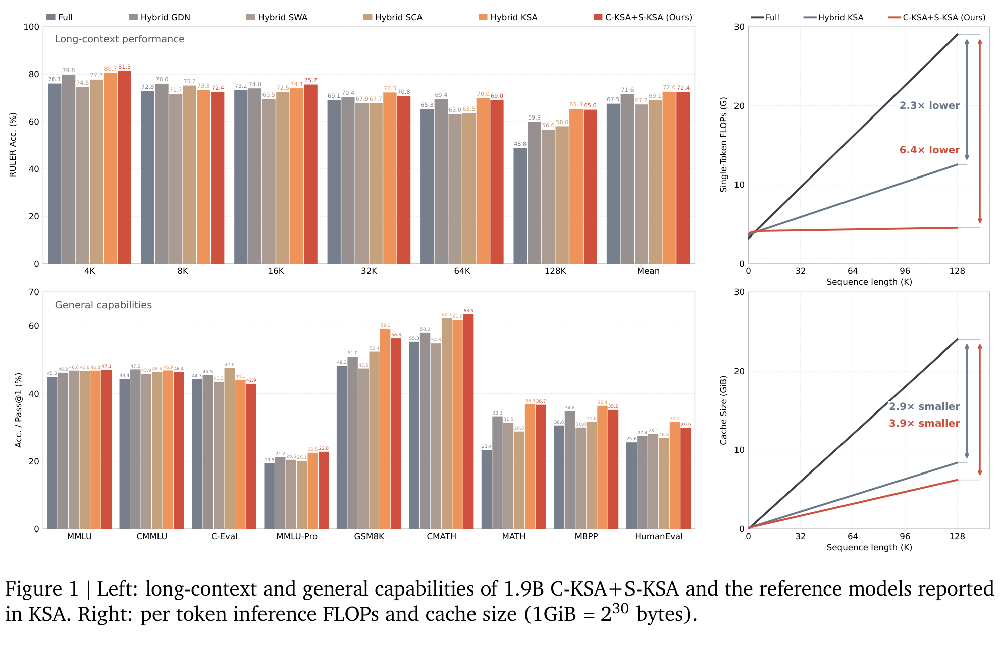
Figure 1: Left: long-context and general capabilities of 1.9B C-KSA+S-KSA and the reference models reported in KSA. Right: per token inference FLOPs and cache size (1GiB = 230 bytes). 左图回答"能力有没有掉"：横轴六档 RULER 长度 + Mean + 九个通用能力 benchmark，C-KSA+S-KSA 的 RULER mean 72.4 与 Hybrid KSA 的 72.6 基本持平，同时远高于 Full 的 67.6；通用能力也大体齐平。右图回答"省了多少"：曲线随序列长度张开，两条标注分别挂在 FLOPs 面板与 cache 面板上。两张图连起来读才是论文的主张：省下来的钱不是拿能力换的。 图中标注的倍数与其口径见下方说明——正文口径与图内标注并不完全一致，这一点对复现很重要。 报告 p.1
💡 点击任意图片可查看原始高清大图,再次点击或按 Esc 关闭。
读数约定: 本页全部数字以论文原文为准;凡由本页依据论文配置整理、归纳或换算的内容,均以「整理 」「推算 」显式标注,便于与论文口径区分。记号沿用论文:$k_s$ 为 Summary 的文本 chunk 大小,$k_m$ 为一个 Meta 条目聚合多少个 Summary,$b$ 为路由块大小,$W$ 为局部窗口覆盖的 chunk 数,$K$ 为稀疏层的远端 token 预算,$N$ 为文本长度。
一句话记忆法: C-KSA 管省内存 (把远端 Summary KV 再压 $k_m$ 倍,但只压"存进去的那份",不粗化层间流动的 Summary 表示);S-KSA 管省算力 (把原来读全部历史的 Full 层换成"先用 Summary 选块、再只读选中的原始文本块")。两者都不增加输入 token、不改变 token 布局,所以能直接 retrofit 进已经训好的模型。
第 2 节 背景与痛点：长上下文 serving 到底贵在哪要理解 KSA V2 为什么长成现在这样，先把"贵"这件事拆成三种不同的贵。它们各自的最优解不一样，混在一起谈就会得出错误的结论。
存储贵（KV cache 随序列线性增长）。 标准 full attention 里，每个 token 都必须在 cache 里留一份 key 和一份 value。序列翻倍，显存占用就翻倍。这条线是线性 的，也是长上下文 serving 最先撞到的墙——并发度直接由单条序列的 cache 占用决定。计算贵（prefill 二次方）。 prefill 阶段所有 query 对之前所有 key 做注意力，计算量是 $O(N^2)$。128K 上下文下这一项会压过权重矩阵乘法，成为 prefill 时间的主导项。读取代价贵（decode 每个 query 读全史）。 decode 每生成一个 token，都要把整段历史的 KV 从显存里读一遍。这是带宽瓶颈而非算力瓶颈，而且它同时惩罚了延迟和吞吐。
业界的四条技术路线，本质上是在这三笔账之间做取舍，而不是在解同一个问题：
per-token 压缩 （GQA (Ainslie et al., 2023)、MLA (DeepSeek-AI et al., 2024)、以及 KIVI 这类量化）——把每个位置 的存储变便宜，但位置数不变 。它压的是"每 token 多少字节"，压不掉 $N$。这条线上的收益是干净、无损的，但天花板明确。稀疏注意力 （DSA (DeepSeek-AI et al., 2025)、MoBA (Lu et al., 2025)、NSA (Yuan et al., 2025)）——保留 token 级 KV，只减少每个 query 去读 哪些位置。它把计算和带宽打下来，但 cache 本身并没有缩小，而且它需要一套额外的"该读哪里"的判据。滑窗 / 线性与循环注意力 （滑窗见 Mistral (Jiang et al., 2023)，循环类见 Gated DeltaNet (Yang et al., 2025)）——存储和计算都降下来了，循环类的状态甚至与上下文长度无关。代价是丢失了对远处原始 token 的直接访问 ，历史只能通过被反复聚合的状态间接读回来。hybrid 架构 ——把上面几类按层交错，用少数 full attention 层保留对原文的直接访问。这是工程上最稳的折中，也是 KSA 系列所在的位置。
为什么 hybrid 是主线，而不是纯线性。 纯线性/循环模型的失败模式不是"平均指标差一点"，而是在需要精确取回某个远处字面片段的任务上突然崩掉——因为聚合状态是不可逆的摘要。hybrid 用少数 full 层做"安全网"，把这个失败模式从"崩溃"降级为"贵一点"。但这也留下了一个结构性隐患：那几层 full attention 成了整个模型的性能与成本瓶颈 。KSA V2 正是冲着这个隐患去的。
第 3 节 上游 KSA 回顾：Summary token 是怎么工作的Kwai Summary Attention（KSA，(Chu et al., 2026)）是 hybrid 路线里一个很特别的实例。它的核心机制只有一句话：每 $k_s$ 个文本 token 后面，插一个可学习的 Summary token 。
在 KSA 层里，文本 query 的可见集合分成两部分：附近的 chunk 以全分辨率读原文 （因为近处细节重要且便宜），远处的 chunk 只通过它的 Summary 来读 （一个 chunk 一个 KV 条目）。这直接把远处历史的 KV 条数从 $k_s$ 个压成 1 个，序列维度上就是 $k_s$ 倍压缩。
Hybrid KSA 把这个 KSA 层和 full attention 层按 3:1 交错：三层 KSA 之后接一层 full。第 3 节的 Figure 2 左半边就是这个结构。
最关键、也最容易被忽略的一点：Summary 的 KV 是"层间流动"的。 Summary token 不是一个只在本层用作缓存的辅助条目，它的 hidden state 会作为输入继续传给下一层，被下一层继续读、继续精修。层级越深，Summary 承载的信息越"熟"。因为 Summary 要向前传，所以任何对它的粗化都会污染后续所有层 ；反过来，如果想让远处历史存得更省又不想污染后续层，唯一的出路就是"存的时候压、传的时候不压"。C-KSA 就是这句话的直译。
KSA 的收益是实打实的：论文报告它在长程信息取回上优于同尺寸的 full attention 模型。但它同时留下了两个未被利用的空间——这两个空间构成了 KSA V2 的全部动机。
第 4 节 两个瓶颈：Summary 被"用少了"论文的动机陈述非常明确，可以概括成一句话：Summary 在每个层都被计算和精修，却只被当作低分辨率记忆使用，两头都亏。
瓶颈 (i)：压缩率被 chunk 绑死
KSA 层"一个远处 chunk 存一个条目"，所以想压得更狠，只能把 $k_s$ 调大 。但 $k_s$ 同时决定了 Summary 的粒度：$k_s$ 越大，每个 Summary 要概括的原文越多，它是一个更粗的摘要；而这个更粗的 Summary 会被后面所有层 继续读、继续精修。换句话说，调大 $k_s$ 是一次全局性的表示粗化，代价被整个网络承担 。
这不是理论担忧。KSA 报告自己的 4B ablation 显示，更粗的 Summary chunk 会劣化检索性能（论文在相关工作中复述了这个结论，KSA V2 第 3.7 节还专门做了直接压缩 vs 层级压缩的对照实验）。
把这句话翻译成工程语言： 在 KSA 里，"省显存"和"保留检索精度"是同一个旋钮的两端，你没法只要前者。要拿到 1024 倍压缩，就得把 $k_s$ 从 8 调到 1024，那意味着每个 Summary 要概括 1024 个 token——这已经不是一个摘要，而是一段被压扁的平均值。KSA V2 要做的，是把"存多少"和"传多粗"这两个本来被绑在一起的东西拆开 。
瓶颈 (ii)：full 层读了全部 KV，却付二次方 prefill
另一半的浪费在 full attention 层。它插在 KSA 层中间确实保住了对原文的精确访问，但它的代价是：prefill 阶段 $O(N^2)$ 的注意力计算，decode 阶段每个 query 把整段历史读一遍。而 Summary token 明明"描述着每一个 chunk"，full 层却完全不咨询它们 。
问题在于，full 层读进来的东西绝大部分是无关的。论文给出的实测证据（在冻结的 Hybrid KSA 上做 oracle 选块实验，对应 Figure 12 与 Table 10）：
在 128K 上下文下，oracle block selection 把主注意力的读取集合限制到
约 3.9% 的文本位置，却
保留了约 82% 的 decode attention mass ，并且取得接近 dense 的检索性能。
这句话有两层含义，都值得停下来想：
注意力是高度集中的。 97% 左右的位置贡献了不到 20% 的注意力质量。dense attention 把 $O(N^2)$ 的计算花在了不重要的位置上。缺的不是稀疏性，是"知道该看哪里"的廉价判据。 oracle 之所以叫 oracle，是因为它用了 dense attention 概率来选。真实系统没有这个概率，所以必须有一个足够便宜、在训练中能学到 的路由器。而 Summary——它本来就在描述每一个 chunk——恰恰是一个现成可用的路由器，只是 KSA 从来没有咨询过它。
第 5 节 核心洞察：一套 Summary，演两个角色把第 4 节的两个瓶颈并排放，答案几乎是自明的。论文的洞察可以写成一句不对称的陈述：
作为记忆，Summary 可以在"被存起来的时候"再压一次，而不粗化"被传下去"的表示；作为索引，Summary 可以指挥精确访问层去看哪几个原文块。 高效层存得粗，精确层读得细，Summary 把两边连起来。
请注意这句话里最精巧的部分——它用"什么时候压" 而不是"压多狠" 来归避粗化：
存的时候压（C-KSA） ：把每 $k_m$ 个连续的 Summary KV 池化成一个 Meta KV 条目，只在本层内 用于读取远处历史。Meta 不向前传 。于是远处历史的存储又多了 $k_m$ 倍压缩（合计 $k_s k_m$），而层间流动的 Summary 序列粒度一点没变 ——后面的层拿到的仍是 $k_s=8$ 粒度的精修 Summary。这直接解掉了瓶颈 (i)：压缩率和表示粒度脱钩了。用的时候当索引（S-KSA） ：用已有的 Summary 去池化每个 $b$-token 块的原文 KV，得到块级 routing key，再用 Lightning Indexer (DeepSeek-AI et al., 2025) 选 top 块，主注意力只读这些块的原始 KV。这直接解掉了瓶颈 (ii)：full 层被替换掉，prefill 不再二次方，而且路由候选数比 token 级索引少 $b$ 倍。
还有一个工程上极其重要的性质：两种层都不新增 token，也不改变 Summary 的排布。 它们消耗的是已经存在的 Summary，所以可以直接 retrofit 进一个预训练好的 hybrid 模型 ，不需要改 tokenizer、不需要重新预训练。论文里所有实验都是从这个路子来的——这也是为什么它的实验成本能压到"continued pretraining"量级。
与邻近工作的区别（引用口径取自论文自身）。 DeepSeek-V4 (DeepSeek-AI et al., 2026) 的 CSA 也做学习式的 dimension-wise 聚合，但它聚合的是文本 token 的 KV ，并且把结果作为新的条目参与后续；C-KSA 聚合的是 Summary 的 KV ，且产物是层内私有的。S-KSA 则与 DSA 不同：DSA 做 token 级选择，S-KSA 降到块级，路由候选少 $b$ 倍；与 CSA 也不同：CSA 的主注意力读的是压缩后的文本，S-KSA 的主注意力读的是原始 文本 KV。
第 6 节 架构总览与整体收益下面这张图值得花几分钟把每一块都对上号。左边是 KSA V1 的 Hybrid 结构，中间是两种新层的插入方式，右边是 KSA V2 的整体形态。
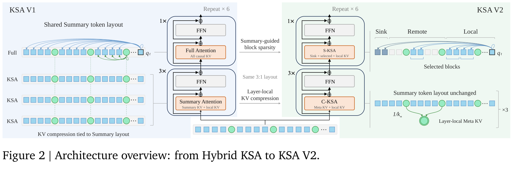
Figure 2: Architecture overview: from Hybrid KSA to KSA V2. 左：KSA V1 的 Hybrid 结构，Full 层与 KSA 层按 3:1 交错，KV 压缩率被 Summary 排布死死绑住。中：两种新层的替换方式——3 个 KSA 层替换为 C-KSA（层内把 Summary KV 压成 Meta KV，注意图中标出的 $1/k_m$），第 4 个 Full 层替换为 S-KSA（sink + 选中块 + local KV）。右：KSA V2 的最终形态，Summary token 的排布完全不变，所以可以 retrofit。看这张图要抓的重点是「tokens 没变、layout 没变，变的只有每个层怎么读写 KV」 。 报告 p.3
论文给出的整体结论可以浓缩成一句：在 1.9B（MHA ）与 128K 序列规模下，常驻 cache 降低 40.4%，prefill 吞吐 1.51×，decode 吞吐 1.27× （相对 Hybrid KSA）；相对 Full 则是 cache 降低 73.7%、prefill 吞吐 2.16×。
更细的一层拆解见第 1 节的图 1 。它有两个面板，回答的是两个不同的问题，不要混看；下面这段口径说明，就是对着那张图里的标注写的。
右图倍数：正文口径与图内标注不一致，引用时务必注明来源。 正文（第 3.6 节）口径 ：128K 下，per text token 的 matrix-FLOP 相对 Full 低 6.38× 、相对 Hybrid KSA 低 2.76× ；BF16 的 KV 及 index-key cache 相对 Full 小 3.86× 、相对 Hybrid KSA 小 1.35× 。图内标注 ：FLOPs 面板写 "6.4× lower" 与 "2.3× lower"，cache 面板写 "3.9× smaller" 与 "2.9× smaller"。核对结果（整理） ：与 Full 比较的两项一致（6.4≈6.38、3.9≈3.86）；与 Hybrid KSA 比较的两项对不上 ——图内 2.3× / 2.9× 对应正文 2.76× / 1.35×。其中 cache 一项还可以用论文自己给的实测值交叉验证：128K 常驻 cache 为 Full 24.00 GiB、Hybrid KSA 10.59 GiB、C-KSA+S-KSA 6.31 GiB，故 $24.00/6.31 = 3.80$（对图内 3.9，吻合），$10.59/6.31 = 1.68$（对正文 1.35 与图内 2.9 都不吻合 ）。本页正文一律采用第 3.6 节的书面口径 ，并把 2.3× / 2.9× 标注为「图内标注，与正文不一致」。
第 7 节 三条贡献与本文的结构论文自陈的贡献是三条，逐条对应它解决的问题：
C-KSA ：在存储 时把 Summary KV 压成层内私有的 Meta 条目，使远处历史的进一步压缩不再需要更粗的 Summary。S-KSA ：把已有的 Summary 变成块级 routing key，对选中的原文块做稀疏注意力。落地与边界 ：给出将预训练 Hybrid KSA 改造过来的 retrofit 配方与 GPU kernel，RULER 性能与母模型持平；同时明确报告剩余成本在哪、以及在什么情况下会失败 。
第三条值得单独说一句。这篇报告在失败模式上是坦白的：剩余成本主要在稀疏层保存的原文 KV，而 block selection 在聚合型任务 上会退化（频繁词抽取从 45.00% 掉到 26.67%）。一份技术报告愿意把退化项写清楚，比多刷两个点的指标更有工程价值。
接下来怎么读。 第 8 节起进入方法本体：先建立记号与整体布局（第 8 节），再逐个拆 C-KSA 的两级聚合（第 9 节）与 attention-mass correction（第 10 节），然后是 S-KSA 的块聚合与路由（第 11 节）。第 12 节用 Table 2 的配置把所有符号落成可以数的具体数字——这一节建议动手跟着算一遍。第 13 节讲 KV cache 布局与内存分析，第 14 节讲 kernel。
第 8 节 记号与整体布局：先把手里的牌数清楚方法章一上来就定了符号。这些符号后面每个公式都要用，先花两分钟钉死，比后面反复回查划算。
$T_i$ —— 文本 token。整个模型真正要预测的对象。
$S_c$ —— chunk Summary。第 $c$ 个 chunk 的摘要 token，每 $k_s$ 个文本 token 插一个 。
$M_g$ —— Meta KV 条目。第 $g$ 组 Summary 被压缩后的产物，只在本层使用 。
$k_s$ —— chunk 大小，即一个 Summary 负责多少个文本 token。1.9B 与 4B 都取 8。
$k_m$ —— 多少个连续 Summary 压成一个 Meta 条目。1.9B 取 128，4B 取 32。
$b$ —— 一个 routing block 含多少个文本 token。取 4 ，且要求 $b$ 整除 $k_s$。
$W$ —— 本地窗口覆盖多少个完整 chunk 。KSA/C-KSA 的 "sliding chunk number" 为 128，配合 $k_s=8$ 得到 1024 个文本 token 的 local window。
$K$ —— 远端预算，以原始文本 token 数计 ，1.9B 与 4B 均为 4096。注意它是 token 数，不是块数：可选的块数是 $K/b$。
$q_t$、$O_t$ —— 位置 $t$ 的注意力 query 与输出。
整体布局沿用 Hybrid KSA 的 3:1 ：三个 C-KSA 层后接一个 S-KSA 层 ，如此循环。这一点很关键——KSA V2 没有改层数比例 ，它只是把原来"三层 KSA + 一层 Full"里的每一层换成了更强的版本。所以改造是 drop-in 的：层的数量、宽度、Summary 排布、tokenizer 全都不动。
为什么 3:1 这个比例不用动？ 因为两种新层解决的是 hybrid 结构内部两个正交的浪费：C-KSA 让"省显存的层"更省，S-KSA 让"精确访问的层"更便宜。3:1 这个比例本身对应的是"精度安全网需要多厚"这个经验问题，KSA V2 没有证据去动它，也就没动。这是一个工程上正确的克制。
第 9 节 C-KSA 之一：两级聚合，公式 (1)–(4)C-KSA 做的事一句话能说完：KSA 已经在文本序列上插了 Summary，C-KSA 再在 Summary 序列上做一次聚合。 它把每 $k_m$ 个连续的 Summary KV 条目池化成一个 Meta KV 条目，于是远处历史的压缩因子从 $k_s$ 变成 $k_s k_m$，而近处文本仍然直接可读。
这里有两级聚合，方向完全不同，别混：
第一级：Text → Summary（KSA 原有）
把文本序列切成 $k_s$ 个 token 的 chunk，每个 chunk 尾部追加一个 Summary token $S_c$。所有 Summary 共享同一个可学习的初始 embedding ，并且使用和文本 token 完全相同的 attention 与 FFN 参数——它不是一个特殊的旁路模块，就是序列里多出来的一种 token。
在每一层里，$S_c$ 去 attend 它自己 chunk 内的文本 token 加上它自己 ，据此聚合出 chunk 级信息。位置编码上有个细节：文本 token 保留原本的 position index，而 $S_c$ 使用它所在 chunk 最后一个文本 token 的位置。
为什么 Summary 要复用 chunk 末位的位置？ 三个原因叠在一起：(1) 它是因果 的——Summary 只能看到自己 chunk 及之前的文本，用末位位置不会让它"偷看"未来；(2) 它让 Summary 在位置空间里贴着它所概括的那段内容 ，与后面第 10 节的距离语义一致；(3) 复用位置意味着不需要额外的位置桶，也不用改 position embedding 的表。代价是 ：Summary 与它所在 chunk 的最后一个文本 token 共享位置，两者只能靠内容而非位置区分——这也是为什么第 10 节要显式区分"本地文本 KV"和"boundary Summary KV"这两类可见条目。
第二级：Summary → Meta（C-KSA 新增）
现在进入本文的核心。在每个 C-KSA 层内部，把 Summary 序列按不重叠 的 $k_m$ 个一组切开。对第 $g$ 组的第 $r$ 个 Summary（$0 \le r < k_m$），记它的归一化层输入为 $h_r \in \mathbb{R}^d$（$d$ 为 hidden size）。公式 (1) 同时算出三样东西：
$$
k_r = \mathrm{RMSNorm}(W_K h_r), \qquad v_r = W_V h_r, \qquad z_r = A h_r. \tag{1}
$$
逐项解释，因为每一项的角色都不同：
$k_r$、$v_r$ —— 这个 Summary 的 key 和 value。注意 $W_K, W_V \in \mathbb{R}^{d_{KV} \times d}$ 就是 backbone 已有的投影 ，不是新加的。也就是说，被池化的对象是模型本来就会算出来的那对 KV，不多余、不另起炉灶。
$z_r = A h_r$ —— 聚合 logit 。$A \in \mathbb{R}^{d_{KV} \times d}$ 是额外新增的可学习投影 ，它的输出宽度刻意对齐 $d_{KV}$（所有 head 的 key/value 总宽度）。这是 C-KSA 唯一的新"大脑"。
还有一个形状上的细节值得注意：RMSNorm 是逐个 attention head 独立施加的 。这意味着不同 head 的 key 尺度不会互相干扰，聚合权重可以在每个 head 内部各自形成。
接下来公式 (2) 把这些 logit 变成权重：
$$
[\alpha_0, \ldots, \alpha_{k_m-1}] = \mathrm{softmax}_{\text{group}}\big[\, z_0 + B_0,\; \ldots,\; z_{k_m-1} + B_{k_m-1} \,\big]. \tag{2}
$$
三个要点：
$B_r \in \mathbb{R}^{d_{KV}}$ 是新增的组内位置偏置 ，可学习。它给"组内第 $r$ 个 Summary"一个身份——没有它，池化对组内顺序就是完全对称的，而组内位置其实携带信息（越靠后的 Summary 覆盖越近的内容）。softmax 在 $k_m$ 个 Summary 这个维度上做 ，所以对每一组，$\sum_r \alpha_r = 1$（逐坐标成立）。这是一个凸组合，输出天然落在输入的凸包内，不会因为聚合而放大数值。softmax 是逐 feature 坐标独立做的 （论文明确写了 "independently for each feature coordinate"）。这一点很反直觉但很重要：$\alpha_r$ 不是一个标量权重，而是一个宽度为 $d_{KV}$ 的向量 。也就是说，第 37 号特征维度可以偏爱组内第 2 个 Summary，而第 38 号特征维度偏爱第 5 个。这就是论文所说的 dimension-wise aggregation（与 DeepSeek-V4 (DeepSeek-AI et al., 2026) 同源），也是为什么下面用的是 element-wise 乘法而不是标量加权。
公式 (3) 执行池化：
$$
\bar{k} = \sum_{r=0}^{k_m-1} \alpha_r \odot k_r, \qquad \bar{v} = \sum_{r=0}^{k_m-1} \alpha_r \odot v_r, \tag{3}
$$
$\odot$ 是逐元素乘。同一套权重同时聚合 key 和 value ——这个设计选择是刻意的：如果我们用两套独立的权重去聚合 K 和 V，那么 $\bar{k}$ 与 $\bar{v}$ 就可能来自对组内不同 Summary 的不同偏好，K 和 V 不再"配对"，注意力的可解释性和稳定性都会变差。共用一套权重保证了 $\bar{k}$ 与 $\bar{v}$ 描述的是同一个被聚合出来的东西 。
最后一步，公式 (4) 给池化结果补上位置信息：
$$
M_g = \big(\mathrm{RoPE}(\bar{k},\, p_g),\; \bar{v}\big). \tag{4}
$$
$p_g$ 是该组最后一个 Summary 的位置 。这里有两个刻意的选择：
RoPE 施加在池化之后，而不是之前。 如果先对每个 $k_r$ 做 RoPE 再加权求和，由于 RoPE 是随位置旋转的，不同位置的旋转结果相加会在数学上"互相干涉"，得到的既不是 $p_g$ 处的 key、也不是任何一个真实位置的 key。先池化、后旋转，才能让 Meta 条目干净地坐在 $p_g$ 这个位置上。$v_r$ 不做 RoPE（标准做法，RoPE 只作用于 key/query）。取组内最后一个位置。 因为 Meta 代表的是"这 $k_m$ 个 Summary 覆盖的那整段历史"，而因果注意力只能看过去，取最后一个位置意味着 Meta 不会声称自己知道未来——它最保守、也最远离当前 query。这与第一级里 "Summary 用 chunk 末位位置" 是同一条设计原则的复现。
Meta 只在本层用、不向前传
论文在公式 (4) 之后用一句话钉死了整个方法成立的根基：
Meta 条目只在构造它的那一层内使用；原始的 Summary 状态继续跨层传播。 因此 $k_m$ 可以在不同 C-KSA 层之间自由变化，而不改变共享的 Summary token 排布。
这一句解释了第 4 节瓶颈 (i) 是怎么被解掉的。回头看：KSA 里加大 $k_s$ 之所以危险，是因为 Summary 要向前传，粗化会污染后续全部层。C-KSA 把压缩产物 $M_g$ 做成层内私有 ——它是一次"用完即弃的读取视图"，不进入 hidden state 序列。于是：
远处历史的存储又省了 $k_m$ 倍（合计 $k_s k_m$），
而层间流动的 Summary 序列粒度一点没变 ，后面的层拿到的仍是 $k_s=8$ 粒度的精修 Summary，
额外的自由度：每一层可以选自己的 $k_m$ （层内私有不产生跨层一致性约束），这在论文的 Future Work 里被明确列为后续方向。
然后是代价，这一面也要说清楚。Meta 不向前传意味着它不是"更好的表示"，只是一个"更省的读取视图" ：本层从 Meta 读到的信息，下一层无法直接继承，得从传下来的 Summary 重新压一遍。此外，参数 $A$ 与 $\{B_r\}$ 是逐层独立 的（"specific to each layer"），但组间共享 （"shared across groups"）——也就是说一层只有一套聚合规则，所有 Meta 组共用，参数开销是 $O(d \cdot d_{KV} + k_m d_{KV})$ 而不是乘以组数。
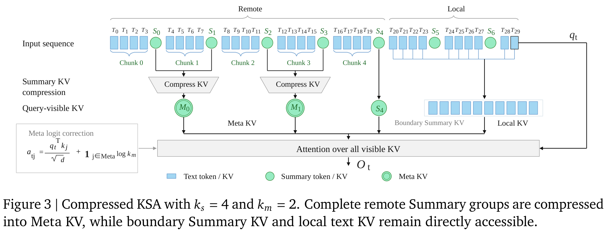
Figure 3: Compressed KSA with $k_s = 4$ and $k_m = 2$. Complete remote Summary groups are compressed into Meta KV, while boundary Summary KV and local text KV remain directly accessible. 这张图把"谁能被看见"讲得最清楚。序列按 4 个文本 token 一个 chunk 排开，$k_m=2$ 表示两个 Summary 一组。左侧 Remote 区域里，$S_0,S_1$ 构成一个完整 组，被压成 $M_0$；$S_2,S_3$ 压成 $M_1$——它们对当前 query 只以 Meta 形式出现。右侧 Local 区域里，最近的 $S_4$ 仍以原始 Summary 出现（它是 boundary Summary，因为它的组还没凑满），而当前 chunk 的文本 token 直接以原文可见。图下方那行 $a_{tj}=q_t^\top k_j/\sqrt{d} + \mathbb{1}_{j \in \mathrm{Meta}}\log k_m$ 是第 10 节的修正项，先记住"给 Meta 加一个常数"即可。 报告 p.4
第 10 节 C-KSA 之二：三类可见 KV 与 attention-mass correction三类可见 KV：一个 softmax，三个来源
对每个文本 query，C-KSA 的可见集合由三部分拼成：
local text（本地文本） ——当前 chunk 的因果前缀，再加上最多 $W$ 个完整 的前置 chunk 的原始文本 KV。这部分全分辨率、无损 。boundary Summary（边界 Summary） ——紧邻本地窗口之前、但还没凑满一组的那些 Summary（少于 $k_m$ 个）。它们保持各自独立可见 ，直到它们所在的整个组都落到窗口之外。remote Meta（远端 Meta） ——窗口之外的每一个完整 的 $k_m$ 组，由一个 Meta KV 条目代表。
三类条目参与同一次 attention softmax。 论文特意强调 "All three types of entries participate in a single attention softmax"——不是三段注意力拼接或加权融合，而是一个统一的 softmax 分母，里面装着本地文本、边界 Summary 和 Meta 三种粒度的条目。这个设计让不同粒度之间的相对权重是可学的、被同一次归一化约束的 ，而不需要人为设一个 混合系数。代价就是下面这个问题。
问题：压缩会偷走远端的注意力质量
把 $k_m$ 个条目换成 1 个条目，会带来一个纯统计意义上的副作用：softmax 分母里的项数变少了。 即使本地 logit 完全不变，远端在归一化后分到的总质量也会下降——因为本来 $k_m$ 个条目各自贡献 $e^{s_i}$，现在只剩一个贡献 $e^{s}$。
论文把这个现象命名为 attention-mass correction ，处理方式是在归一化之前 给每个 Meta logit 加上 $\log k_m$：
$$
\exp\big(s + \log k_m\big) = k_m \exp(s). \tag{*}
$$
推导本身只有一行，但为什么是这一项，值得说透：
我们希望"一个 Meta 条目"在 softmax 里顶得上它代表的 $k_m$ 个 Summary 之和 。
如果组内 $k_m$ 个 Summary 的 logit 按均值 $\bar{s}$ 计，它们合计贡献 $k_m e^{\bar{s}}$。
要让单个 Meta 条目贡献同样的量，就需要 $e^{s'} = k_m e^{\bar{s}}$，即 $s' = \bar{s} + \log k_m$。
因为 $\log$ 与 $\exp$ 的这对互逆关系，加法在 logit 域上等价于乘法在概率域上 ——所以只需一次加法，没有任何归一化的数值麻烦。
这一项在做什么、不在做什么。 它不 试图恢复被池化丢掉的组内细节（那是信息损失，加常数救不回来）；它只 修正"条目数变少"带来的归一化偏置 。用一句话概括：$\log k_m$ 保证「远端 vs 本地」的注意力分配比例不因为压缩而系统性漂移 ，至于远端内部细节记得清不清楚，取决于聚合模块学得好不好。图 3 里那行 $+\,\mathbb{1}_{j\in\mathrm{Meta}}\log k_m$ 就是这个指示函数形式的修正。
还有两个实现细节：
修正只加在 Meta logit 上（指示函数形式），local text 与 boundary Summary 的 logit 不动。这保证了本地窗口的注意力行为与未压缩时逐位一致 ——压缩不改变近处的读法。
论文在后续做注意力可视化时提到，C-KSA 画出的注意力概率已经包含 了 softmax 之前的这个 $\log k_m$ 修正。这提示读 Figure 13 之类图时，Meta 分到的质量是修正后的口径。
第 11 节 S-KSA：用 Summary 当路由器，只读选中的原文块S-KSA 替换掉的是 full attention 层。它要回答的问题只有一个：给定一个文本 query，我该去读哪些原文块？ 它的答案是"让 Summary 替我算"。整个流程分三步：块表示 → 块打分 → 稀疏读取。
第一步：Summary-guided block aggregation，公式 (5)(6)
把每个 chunk 再切成 $b$ 个连续文本 token 的 block（$b$ 整除 $k_s$）。对一个块 $u$，记其归一化层输入为 $h_1,\ldots,h_b \in \mathbb{R}^d$，其所属 chunk 的 Summary 归一化输入为 $h_S \in \mathbb{R}^d$。用一个宽度为 $d_A$ 的辅助注意力头 （省略 head 下标）计算：
$$
q_S = \mathrm{RoPE}\big(\mathrm{RMSNorm}(W_{Q_A} h_S),\, p_S\big), \qquad
k_i = \mathrm{RoPE}\big(\mathrm{RMSNorm}(W_{K_A} h_i),\, p_i\big), \qquad
v_i = W_{V_A} h_i. \tag{5}
$$
$W_{Q_A}, W_{K_A}, W_{V_A} \in \mathbb{R}^{d_A \times d}$ 是每个 S-KSA 层独有的辅助投影，与 backbone 的注意力投影完全独立 。位置 $p_S$ 与 $p_i$ 沿用原始序列位置，其中 Summary 仍然共享其 chunk 最后一个文本 token 的位置。
$$
\hat{z}_u = V^A\, \mathrm{softmax}\!\left(\frac{(K^A)^\top q_S}{\sqrt{d_A}}\right), \qquad K^A = [k_1,\ldots,k_b],\;\; V^A = [v_1,\ldots,v_b]. \tag{6}
$$
公式 (6) 的方向很值得盯着看，因为它是 S-KSA 里最"反直觉"的一步：
Summary 只提供 query，块的文本 token 提供 key 和 value。 softmax 是在块的 $b$ 个文本 token 之间 做的（论文明确写了 "over the block's $b$ text tokens; the Summary supplies only the query"）。所以 $\hat{z}_u$ 不是"块的平均值"，而是块内文本的注意力加权和，权重由 Summary 决定 。Summary 扮演的角色是"我这一 chunk 关心什么"的口味偏好，用它去块内挑重点。
把 $H_A$ 个辅助头的输出拼接起来得到 $z_u \in \mathbb{R}^{H_A d_A}$，这是块 $u$ 的最终表示，后面同时用作索引键的来源。
同一个 chunk 里的所有块共享同一个 Summary query ，但各自聚合自己的文本 token。这类似 HiLS-Attention (Hu et al., 2026) 的 landmark pooling，区别在于 S-KSA 复用了已有的 Summary，没有额外插入 landmark token 。
第二步：块打分，公式 (7)
有了块表示，接下来要有一个便宜的打分器来排块。S-KSA 改造 Lightning Indexer (DeepSeek-AI et al., 2025)：
$$
\rho_u = \sum_{h=1}^{H_I} w_h\, \mathrm{ReLU}\!\left(\frac{(q_h^I)^\top k_u^I}{\sqrt{d_I}}\right). \tag{7}
$$
Indexer 用 $H_I$ 个 query head，维度 $d_I$（两个规模都是 8 头 × 128 维）。
文本 query 的归一化层输入 $h_t$ 被映射成 $q_h^I \in \mathbb{R}^{d_I}$，以及每个 head 一个标量权重 $w_h$。
块表示 $z_u$ 被映射成一个 index key $k_u^I \in \mathbb{R}^{d_I}$，所有 head 共享 。这是省成本的关键：如果每个 head 都有自己的块键，块键的数量要乘 $H_I$。
$\mathrm{ReLU}$ 保证每个 head 的贡献非负（负相关不被当成"负的重要性"），$w_h$ 再按 $1/H_I$ 缩放后把各 head 的得分合成 $\rho_u$。
打分前用 partial RoPE 给位置 $t$ 的 query 和块末位位置的 key 编码位置信息——注意是 partial，只旋转一部分维度。
还有一个只在 4B 上启用的细节：对投影后的 index query/key 额外施加 RMSNorm 。论文在 3.4 节给了动机（backbone 之间的特征尺度差异会影响 index logit 幅度与优化），并报告没有它时 4B Indexer loss 居高不下、21.8B token 后仍低于 C-KSA+Full 母模型，加上它只用 4.2B token 就恢复到接近母模型。1.9B 保持不加，以维持一致性——论文自己也把这个不对称作为开放问题留给了 Future Work。
第三步：稀疏访问，公式 (8)
给定块分数 $\{\rho_u\}$，S-KSA 选出最多 $K/b$ 个远端块 （$K$ 是以原始文本 token 计的远端预算），然后：
$$
O_t = \mathrm{Attn}\big(q_t,\; [K_{\mathcal{L}_t}, K_{\mathcal{R}_t}],\; [V_{\mathcal{L}_t}, V_{\mathcal{R}_t}]\big), \tag{8}
$$
方括号表示沿序列维度拼接，$\mathcal{L}_t$ 是本地位置集合，$\mathcal{R}_t$ 是选中的远端位置集合。三条约束必须同时满足，否则会破坏因果性或浪费预算：
候选块必须属于已完成的 chunk （否则块内内容不完整）；候选块必须整体落在因果本地窗口之前 （否则与本地窗口重复读取）；序列开头的 eligible sink 块被保留在这份预算之内 ，剩下的名额才按分数从高到低填。
然后由 backbone 原有的 Q/K/V 做注意力，每个 head 里对本地与远端 token 做一次 softmax。也就是说，路由分数 $\rho_u$ 只用来"选块"，不参与注意力的加权 ——选进来的块内部，一切照常按真实 q·k 打分。这个区分很重要，它让主注意力的数值行为与 dense 注意力在选中集合上完全一致。
成本账：$O(N^2/b)$ 是怎么来的
对 $N$ 个文本 token，S-KSA 构造约 $N/b$ 个 index key，
候选比较数比 token 级索引少 $b$ 倍 ；
prefill 期路由成本为 $O(N^2/b)$，而主注意力对每个 query 只读预算内的原文块。
推导一行：$N$ 个 query，每个 query 要和约 $N/b$ 个块键比较，逐 head 计算 → $O(N \cdot N/b) = O(N^2/b)$。相比 token 级 DSA 的 $O(N^2)$，省下整整一个 $b$ 因子——这就是为什么 $b$ 的选择（见第 12 节）是"检索质量 vs 路由成本"的权衡点。
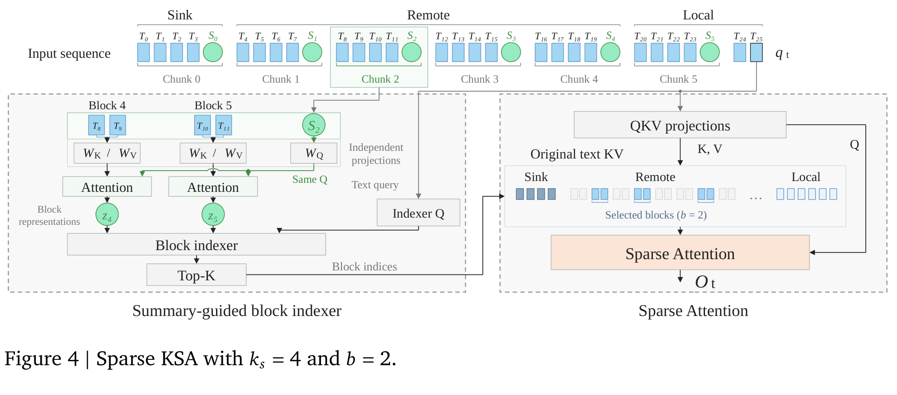
Figure 4: Sparse KSA with $k_s = 4$ and $b = 2$. 左半部分是两级信息流：块内的文本 token 经 $W_K/W_V$ 得到块表示 $\hat{z}_4,\hat{z}_5$，同时 chunk 的 Summary $S_2$ 经 $W_Q$ 提供 query，两路在 "Block indexer" 里做 Top-K 选出块索引。右上角是关键——辅助注意力头与主注意力是独立的 QKV 投影 （图中 "Independent projections" 分支），辅助头算出的只是索引；主注意力用原来的 Q 去读 Sink + 选中块 + Local 的原始文本 KV，得到 $O_t$。注意图中 $b=2$、$k_s=4$，所以每个 chunk 有 2 个块，选中的块（Block 4、Block 5）直接以原文参与注意力。 报告 p.5
第 12 节 把配置落到具体数字：一次可数的走查前面全部是符号。这一节把它们换成能数出来的整数——读技术报告最有效的动作，就是拿它的配置表手算一遍。 配置来自 Table 2。先看图，再算。
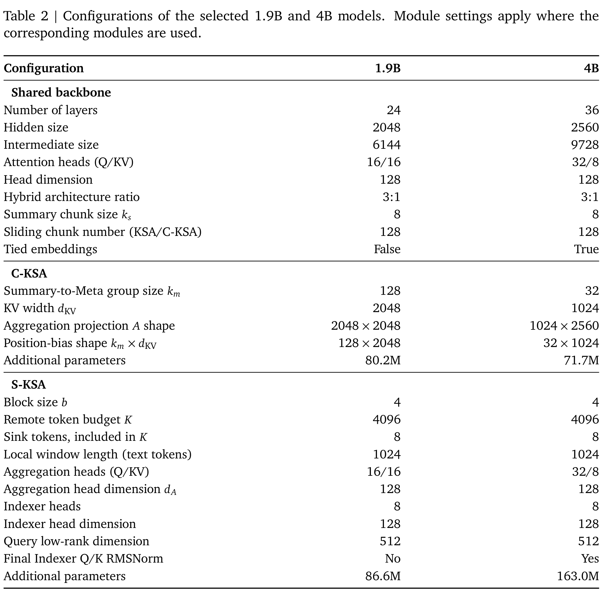
Table 2: Configurations of the selected 1.9B and 4B models. Module settings apply where the corresponding modules are used. 上半部分是共享 backbone，中间是 C-KSA 配置，下半是 S-KSA 配置。走查时请重点抓这几行：层数、Hybrid 比例 3:1、$k_s$、Summary-to-Meta group size $k_m$、Block size $b$、Remote token budget $K$、Local window length 与 Sink tokens。两处对比尤其有意思：1.9B 的 $k_m=128$ 而 4B 的 $k_m=32$（4B 因为 hidden size 更大、层数更多，选了更保守的压缩粒度）；而 $K$、$b$、local window、sink 在 1.9B 与 4B 完全相同 ，说明这些是跨规模固定的工程常数。 报告 p.13
以 1.9B 为例，取：层数 24、Hybrid 比例 3:1、$k_s=8$、$k_m=128$、$b=4$、$K=4096$、local window 1024、sink 8。
走查 1：24 层里各有多少层
3:1 表示"三个 C-KSA 后接一个 S-KSA"为一个周期，每周期 4 层。直接做整除：
$24 \div 4 = 6$ 个完整周期，因此 C-KSA 层 $= 6 \times 3 = 18$ 层 ，S-KSA 层 $= 6 \times 1 = 6$ 层 。校验：$18+6=24$，与 Table 2 的层数吻合。（整理：由 Table 2 的层数与 Hybrid ratio 直接除算得到。）
这个数字马上能派上用场：全模型 24 层里只有 6 层需要保存原始文本 KV ，剩下 18 层全部走压缩路径。第 13 节讲"剩余成本在哪"时，指的就是这 6 层。
走查 2：128K 时一个 C-KSA 层里有多少 Meta 条目
顺序推：
文本 token 数 $N = 128\text{K} = 131072$。
每个 Summary 覆盖 $k_s=8$ 个文本 token，所以 Summary 数 $= N/k_s = 131072/8 = \mathbf{16384}$。（推算：由 $k_s=8$ 直接除算，未计入每个 chunk 的额外 Summary 自身位置。）
每 $k_m=128$ 个 Summary 压成一个 Meta，所以 Meta 条目数 $= 16384/128 = \mathbf{128}$。
128K 上下文，一个 C-KSA 层只有约 128 个 Meta 条目代表全部远端历史。 论文据此说明了为什么选 $k_m=128$ 就够：既然 128K 下只剩约 128 个条目，再往上加 $k_m$ 对 cache 的进一步节省已经很小，因此把更大的压缩因子留给百万级上下文。这也是"配置选择"和"收益递减"配合得比较漂亮的一个例子——压缩到条目数已经和常数同阶时，就该停手了 。
走查 3：远端压缩因子 $k_s k_m$ 与 per-token 宽度
远端历史的序列维度压缩因子是两级相乘：
$k_s \times k_m = 8 \times 128 = \mathbf{1024}$。（推算：两级压缩因子相乘。） 也就是说，远处历史在序列维度上被压了 1024 倍。
把它换成"每个原始 token 摊到多少 KV 宽度"，取 Table 1 的示例设定 $H=128$、$d_h=128$、$H_{KV}=8$：
MHA ：$2 \times 128 \times 128 = \mathbf{32768}$ 个标量 / token。GQA （$H_{KV}=8$）：$2 \times 8 \times 128 = \mathbf{2048}$ 个标量 / token，约为 MHA 的 1/16。C-KSA（MHA 宽度）：$2 \times 16 \times 128 / 1024 = \mathbf{4}$ 个标量 / token。
C-KSA + GQA：$2 \times 8 \times 128 / 1024 = \mathbf{2}$ 个标量 / token。
（推算：套用论文 Table 1 的公式 $2 N H d_h /(k_s k_m)$ 与 $2 N H_{KV} d_h /(k_s k_m)$，代入上述宽度与压缩因子。注意这里的 $H=128$、$d_h=128$ 是 Table 1 的示例设定，不是 1.9B 模型的配置——1.9B 实际是 16 个 Q/KV head、head dim 128。）
走查 4：$K$ 与 $b$ 换算成块，以及路由候选数
$K=4096$ 是以原始文本 token 计 的远端预算，块大小 $b=4$，所以：
可选远端块数 $= K/b = 4096/4 = \mathbf{1024}$ 个块。（推算：$K$ 的定义单位为 token，除以块大小即得块数。）
同时，索引空间的规模也可以数出来：$N=128\text{K}$ 时块总数 $= N/b = 131072/4 = 32768$ 个块，而 token 级索引的候选数是 131072。所以块级路由把每个 query 的比较对象从 131072 降到 32768，正好是 $b=4$ 倍 。（推算：由候选数定义直接除算。） 这正是第 11 节 $O(N^2/b)$ 里那个 $b$ 的具体来源。
还有一条容易漏掉的换算：$K=4096$ 里已经包含了 8 个 sink token ，而 1024 个 token 的 local window 是另外 保留的、不占这份预算。所以一个 query 在 128K 上下文下实际读到的文本 token 上限约为 $4096 + 1024 = 5120$，即 131072 的 约 3.9% 。（推算：$5120/131072 \approx 3.91\%$，与论文在 oracle 实验中报告的"约 3.9% 位置"一致。） 这个 3.9% 就是第 4 节那个 $O(N^2)$ 被砍掉的规模——论文的洞察（注意力高度集中）和配置（$K$、local window）在这里对上了账。
走查 5：新增参数与预算自检
Table 2 同时给了新增参数量：1.9B 的 C-KSA 侧是 80.2M、S-KSA 侧是 86.6M；4B 分别是 71.7M 和 163.0M。其中 C-KSA 的可核对部分是聚合投影 $A$ 与位置偏置 $\{B_r\}$：
1.9B：$A$ 为 $2048 \times 2048 \approx 4.2\text{M}$，$\{B_r\}$ 为 $128 \times 2048 \approx 0.3\text{M}$，合计约 4.5M —— 相对 80.2M 的总量只占很小一部分，说明 C-KSA 的新增参数主要不在聚合模块本身 ，而是分布在各层与 KV 宽度相关的部分。（推算：由 Table 2 的 shape 相乘得到；"主要不在聚合模块"是与 Table 2 报告的总量对比得出的整理结论。）
4B：$A$ 为 $1024 \times 2560 = 2.62\text{M}$，$\{B_r\}$ 为 $32 \times 1024 = 0.03\text{M}$，合计约 2.65M ，而 Table 2 报的 C-KSA 新增参数是 71.7M。同样的现象：$k_m$ 从 128 降到 32，位置偏置表直接缩小为 1/4。
这组数字提示了一件事： 聚合模块本身很"轻"（几 M 量级），所以 C-KSA 的改造在参数上是便宜的；真正决定成本的是它改变了 KV 的读写宽度与条目数 。对工程师来说这是个好消息——retrofit 一个已训练模型时，需要新学的东西很少，而收益（cache 与带宽）很大。
第 13 节 KV cache 布局、内存分析，与机制对比方法能不能落地，最终看 cache 怎么摆、怎么更新。C-KSA 的 cache 设计有一个硬性目标：让每个文本 query 能用"一次连续的切片"读到它全部可见的 KV 条目 ，从而避免每步拼接若干 cache 段。这个目标决定了整套布局长什么样。
12.1 结构：两个组件
每个 C-KSA 层维护两部分：
Attention KV Cache ——key 和 value 分成两个张量，但布局相同 ，沿序列维度依次是：当前 chunk、local text ring、remote history，最后是空闲槽位。Summary Ring Buffer ——存放本地 chunk 的 Summary KV 以及压缩所需的辅助状态。
尺寸上：当前 chunk 预留 $k_s$ 个文本槽，local ring 预留 $k_s W$ 个槽（对应 $W$ 个完整前置 chunk），remote history 里放 Meta 条目以及不足 $k_m$ 个、正在等待压缩的 Summary。两个 ring 共享同一个指针 ，指向下一个要被替换的 chunk 槽位。
有一条规则很容易被忽略但对理解行为很关键：只要一个 chunk 还在本地窗口内，文本 query 就读它的原始文本 KV，而不是它的 Summary KV。 只有当这个 chunk 被挤出窗口，它的 Summary KV 才进入 remote history。
12.2 五步更新流程（Figure 5 的子图 a–e）
论文用一组 $k_s=2$、$W=4$、$k_m=4$ 的小例子把整套更新走了一遍。逐张看：
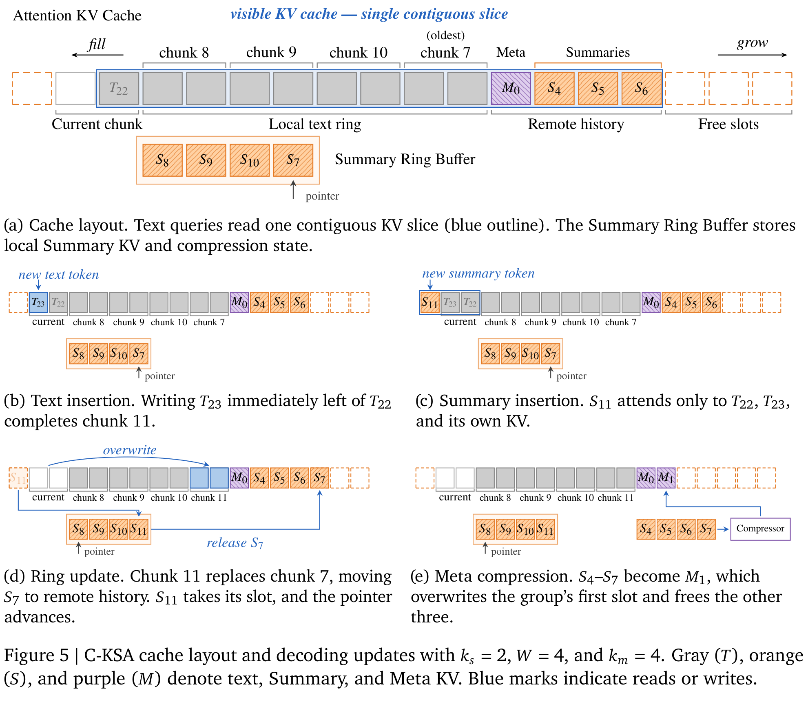
Figure 5: C-KSA cache layout and decoding updates with $k_s = 2$, $W = 4$, and $k_m = 4$. Gray ($T$), orange ($S$), and purple ($M$) denote text, Summary, and Meta KV. Blue marks indicate reads or writes. 五个子图是一次完整的事件序列，建议按 a→e 的顺序读。(a) 是静态布局：蓝色外框圈出的是一整段连续 的 visible KV cache（由 local text ring、remote history 的 Meta、以及若干 Summary 拼成），下方是 Summary Ring Buffer，两者由同一个 pointer 串联。(b)(c) 是写入 ：文本 KV 从右向左填当前 chunk 区，新 Summary 只 attend 自己 chunk 的文本 KV 加自身。(d) 是 ring 的替换 ：新 chunk 顶掉最老的 chunk，被顶出的 $S_7$ 进入 remote history。(e) 是压缩 ：$S_4$–$S_7$ 四个 Summary 合成 $M_1$，写回该组第一个槽位，其余三个槽释放。 报告 p.7
逐步拆解：
(a) Cache layout ——文本 query 读一整片连续的 KV 切片（蓝框）。Summary Ring Buffer 存的是本地 chunk 的 Summary KV 和压缩状态。要点：可见性是一片连续内存，不是若干段的拼接 。(b) Text insertion ——新的文本 KV 从右向左 写入当前 chunk 区，这样"已填充的部分"始终紧挨着 local text ring，连续性不被打断。例子中待写入的 $T_{23}$ 落在 $T_{22}$ 左侧，凑满 chunk 11。(c) Summary insertion ——chunk 边界处的 Summary query 只 attend 已完成 chunk 的文本 KV 和它自己的 KV 。例子里 $S_{11}$ 只看 $T_{22}$、$T_{23}$ 和自身。注意这里的因果性：Summary 绝不能看到下一个 chunk 的内容。 (d) Ring update ——文本与 Summary 的注意力都算完之后，已完成 chunk 的文本 KV 被拷贝 进 local text ring，它的 Summary KV 与辅助状态进 Summary Ring Buffer。ring 没满就用空槽；满了就替换最老的本地 chunk。被替换掉的 Summary KV 移入 remote history，但辅助状态保留 （因为将来压缩要用）。例子中 chunk 11 替换 chunk 7：$S_7$ 进远端，$S_{11}$ 占据它的 Summary ring 槽位，pointer 前进到 $S_8$ 所在的槽。(e) Meta compression ——当 remote history 里攒够 $k_m$ 个未压缩 Summary，就压成一个 Meta 条目。这个条目 覆写该组的第一个槽位 ，剩下 $k_m-1$ 个槽释放出来复用。例子中 $S_4$–$S_7$ 合成 $M_1$，紧挨着 $M_0$ 存放。关键约束：覆写后可见 KV 仍然连续 ，所以文本 query 依旧一次切片读完。
整个设计的巧妙之处在 (e)： 压缩不是"把 4 个条目搬到新地方再释放 4 个槽"，而是"就地把结果写在第 1 个槽上、释放后 3 个"。这样做的代价是需要保证 Meta 条目的位置在序列语义上仍然有序（它代表的那段历史确实排在那附近），收益是
可见区域永远保持单块连续内存 。这也是为什么
decode 阶段可以直接用 SDPA 而不需要 gather 内核——第 13 节还会回到这一点。
12.3 内存分析：公式 (9)(10)
记文本长度为 $N$，$H$ 与 $H_{KV}$ 为 query / KV head 数，$d_h$ 为 head width，$w$ 为本地文本窗口。KSA 的主 cache 项是 $2 N H_{KV} d_h / k_s$；C-KSA 按第 9 节的压缩规则把它替换为：
$$
M_{\text{C-KSA}} = 2 H_{KV} d_h \left[\frac{N}{k_s k_m} + O\!\left(\frac{k_s}{W} + W + k_m\right)\right]. \tag{9}
$$
读这个式子要分两块看，因为它们的量级完全不同：
增长项 $\dfrac{N}{k_s k_m}$ ——随 $N$ 线性、但被 $k_s k_m$ 除。这就是"远处历史"的部分。$k_s=8$、$k_m=128$ 时，它是同 KV 宽度未压缩注意力的 1/1024 。有界项 $O\!\left(\dfrac{k_s}{W} + W + k_m\right)$ ——不随 $N$ 增长 。论文说明了它对应什么：local text、最近的 Summary、以及尚未凑满的压缩组。三项各有来源：$W$ 是本地窗口对应的 chunk 数；$k_m$ 是"待压缩的零头"上限；$k_s/W$ 那一项来自 chunk 粒度与窗口粒度之间的取整关系。
这份分析最该记住的一句： 1024× 只是远处历史 的名义压缩因子，本地与辅助项的缓存依然存在 。在固定压缩因子的前提下，cache 随 $N$ 依然是线性的——KSA V2 做的是把斜率压小，而不是把增长变成常数。任何声称"cache 不再增长"的复述都是误读。
另一个性质是正交性 ：C-KSA 保留了 KSA 与 per-position 压缩（GQA / MLA ）的正交关系——多出来的 $k_m$ 因子只是乘在序列压缩上，不改变 KV head 数、也不改变表示宽度 。所以 C-KSA+GQA、C-KSA+MLA 这些组合可以直接写出来。
最后，混合模型的整体节省有一个简洁的表达式。设 full 层占比为 $f$，层数与 KV 宽度都匹配时：
$$
\frac{M_{\text{C-KSA+Full}}}{M_{\text{Hybrid KSA}}} \simeq \frac{f + (1-f)/(k_s k_m)}{f + (1-f)/k_s}. \tag{10}
$$
代入 $f = 1/4$（3:1 布局）就能看出一个重要的结构性事实：分子分母里都留着 $f$，所以 Full 层限制了整机节省的上限。 换成人话——无论 KSA 层怎么压，只要还有 1/4 的层在做 dense full attention，那部分 cache 就一分钱都省不下来。这正是 S-KSA 存在的理由 ：不把最后一层 dense 拿掉，公式 (10) 的分子就永远被 $f$ 托着。（推算示例：取 $f=1/4$、$k_s=8$、$k_m=128$ 代入 (10)，比值 $\approx 0.73$，即整机 cache 约降到 73%——与论文实测的 40.4% 降幅方向一致；差异来自实测口径还包含 indexer、辅助状态与 workspace，以及 Full 层本身 KV 宽度更大。此处的 0.73 与 40.4% 不是同一口径，不可直接相减比较。）
上面这段"名义 73% vs 实测 40.4%"的分歧不是笔误，而是理解全文效率主张的关键，值得单独摊开一张账本。论文的 1024× 压缩率是远端历史 KV 的名义口径（Table 1、§2.3.2）；而它对外宣传的"降 40.4%"是128K 常驻缓存 的实测口径（Figure 11a、§3.6），两者相差两个数量级。下面这张图把两种口径并排画出来——论文里没有任何一张图做过这件事 （Figure 6 画的是缓存随序列增长的曲线，Figure 11a 画的是三个模型的实测柱），所以由本页补上：
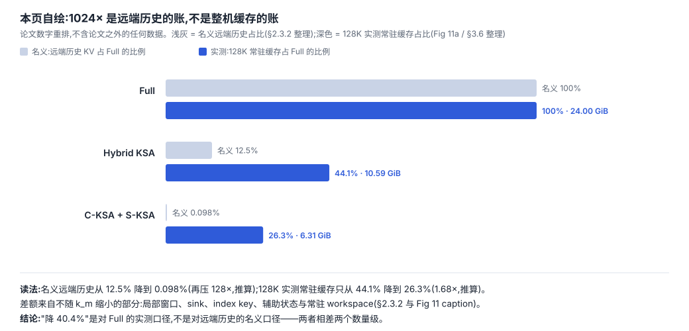
本页自绘: 1024× 是远端历史的账,不是整机缓存的账——同一组模型在"名义压缩率"与"128K 实测常驻缓存"两种口径下的落差。
读法:每个模型两行——浅灰 是名义远端历史 KV 占 Full 的比例,深色 是 128K 实测常驻缓存占 Full 的比例。全部数据只来自论文 :名义口径取自 Table 1 的 Compression Rate 列与 §2.3.2 的 $1/(k_s k_m)$;实测口径取自 Figure 11(a) 与 §3.6 的三个绝对值(Full 24.00 GiB、Hybrid KSA 10.59 GiB、C-KSA+S-KSA 6.31 GiB),占比由本页以 24.00 为分母推算 而得(44.1%、26.3%),非论文直接给出。要看的落差:C-KSA 的名义远端历史只有 Full 的 0.098% ,但实测常驻缓存仍有 Full 的 26.3% ——两者相差两个数量级。差额的来源论文讲清了 :§2.3.2 指出 $k_m$ 只作用于"增长的历史项",而局部窗口($O(k_s W)$)、sink、index key、辅助状态与常驻 workspace 都是有界但不随 $k_m$ 缩小 的项。所以"降 40.4%"这个对外数字是对 Full 的实测口径,不能与"1024×"混用。
据 Table 1(报告 p.8)、§2.3.2(报告 p.9)、Figure 11a 与 §3.6(报告 p.18)整理;占比为推算
12.4 Table 1：机制对比，以及"两种压法可以相乘"
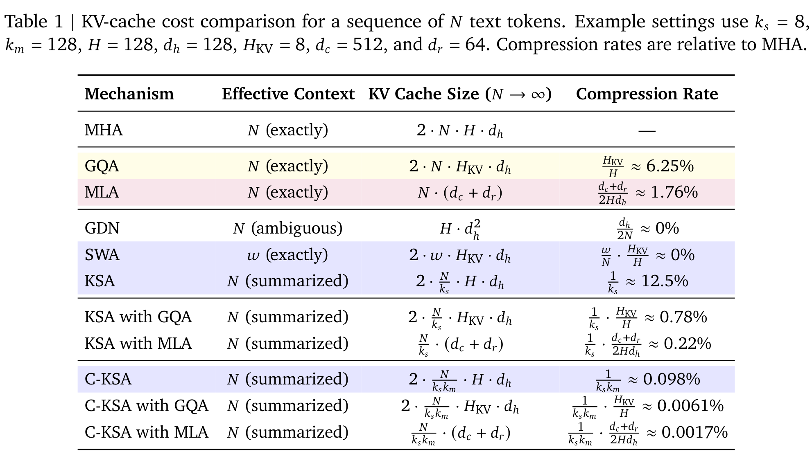
Table 1: KV-cache cost comparison for a sequence of $N$ text tokens. Example settings use $k_s = 8$, $k_m = 128$, $H = 128$, $d_h = 128$, $H_{KV} = 8$, $d_c = 512$, and $d_r = 64$. Compression rates are relative to MHA. 这张表的价值在于它把"有效上下文"和"压缩率"分成了两列，这两列说的不是一回事。看 GDN 与 SWA 两行：压缩率都标 ≈0%，但它们的 Effective Context 一列写的是 ambiguous 和 $w$ (exactly) ——意思是它们根本不是"保留全部位置但存得更省"，而是根本不再保留全部位置 （循环状态无法逐位取回，滑窗之外直接看不见）。右边那列 0% 不是说它们不省显存，而是说"这个压缩率是相对 MHA 的 KV 条目数算的，而它们已经不在这个坐标系里了"。相比之下 KSA 行写的是 $N$ (summarized) ：位置被摘要替代，但仍然是可以逐个定位的条目。再往下看 C-KSA 行，压缩率从 $1/k_s$ 变成 $1/(k_s k_m)$，这就是"两种压法相乘"的具体样子。 报告 p.8
把整列压缩率连起来看，能看出一个清晰的谱系（示例设定下，相对 MHA）：
GQA $H_{KV}/H \approx 6.25\%$ —— 只压每位置的宽度，不动位置数。
MLA $\approx 1.76\%$ —— 同样不动位置数，但把每个位置的存储压到 latent。
KSA $\approx 12.5\% = 1/k_s$ —— 开始动位置数（序列维度压缩）。
C-KSA $\approx 0.098\% = 1/(k_s k_m)$ —— 两级序列压缩相乘。
组合之后：KSA+GQA ≈ 0.78%，C-KSA+GQA ≈ 0.0061%，C-KSA+MLA ≈ 0.0017%。
为什么"正交"这件事重要。 如果两种压缩互相干扰（比如序列压缩会破坏 GQA 的 head 共享假设），那组合出来的数字就没意义。C-KSA 的正交性来自一个干净的事实：它只在序列维度 上减少条目数，KV head 数与每条目宽度完全不动。所以两种优化独立作用、可以直接相乘 。这也是工程上最想要的性质——你可以先上 GQA，再上 C-KSA，两次收益叠加而不是互相吃掉。
12.5 Figure 6：曲线怎么读
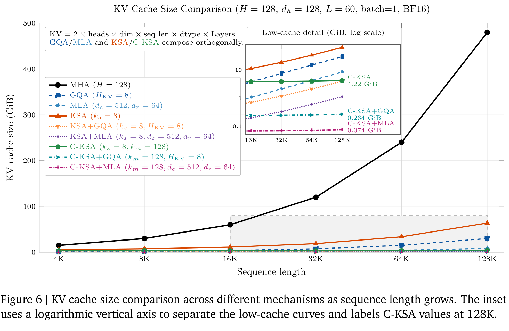
Figure 6: KV cache size comparison across different mechanisms as sequence length grows. The inset uses a logarithmic vertical axis to separate the low-cache curves and labels C-KSA values at 128K. 主图是线性纵轴，用来看"谁在什么长度上开始爆"：MHA 曲线一路陡升到 400 GiB 以上，而 C-KSA 家族被压在很低的水平。插图换成对数纵轴，否则低 cache 的几条曲线会在主图里糊成一条线——注意这是读图技巧 ：在对数轴上，曲线的斜率才代表幂次，而几条 C-KSA 曲线在对数轴上仍然保持线性上升，直观印证了第 12.3 节的"增长项依然是 $O(N)$，只是斜率小了 1024 倍"。插图里标注的 128K 数值：C-KSA 4.22 GiB、C-KSA+GQA 0.264 GiB、C-KSA+MLA 0.074 GiB。图设定为 60 层、batch=1、BF16、local window 1024 token。看这张图要得出的结论不是"C-KSA 最小"，而是两种压缩在曲线上是叠加的、并且都没有破坏线性增长这条基本规律 。 报告 p.9
第 14 节 Kernel 设计：把省下来的 FLOPs 真正换成时间算法上省了 FLOPs 不等于墙上时间变快——如果访存模式变差、或者需要额外的 gather/scatter，省下来的算力会被内存流量吃掉。论文这一节讲的就是怎么避免这件事。
13.1 共用的执行骨架：tiled prefill + online softmax
C-KSA 和 S-KSA 都沿用 FlashAttention 的分块执行与 online softmax (Dao et al., 2022)。设把一组文本 query 组织成 $Q_B$（一个或多个 query tile），对应输出 $O_B$。矩阵里每个格子代表一个 token 向量：query–key 网格里的蓝色格表示可见对，白色格是被 mask 掉的对 。关键优化是每个载入的 KV tile $(K_j, V_j)$ 在片上被整组 query 复用 ，同时用逐 query 的 mask 去强制每个 query 各自的可见集合。
这个骨架的意义在于：它把"可见性"完全交给 mask 处理，而 KV tile 的加载是共享的、与具体 query 无关的 。所以 C-KSA 和 S-KSA 的差异被压缩到两件事上——KV 地址怎么算 ，以及tile 的访问顺序怎么排 。其余全部复用。
13.2 C-KSA：逻辑区间到物理地址的直接映射，公式 (11)(12)
C-KSA 布局规整，所以 kernel 可以用纯算术 算出每个 query 需要哪些 KV，不需要稠密 mask，也不需要把 block-index 表存在显存里。做法是把 text、Summary、Meta 视为三个各自的零基索引空间 （logical segments）：text 与 Summary 的 Q/K/V 在 prefill 期是交错存放的，而预计算好的 Meta K/V 放在单独的 buffer 里。
对一个位置为 $t$ 的文本 query，先定两个量：
$$
a = \max\!\left(0,\; \left\lfloor t/k_s \right\rfloor - W\right), \qquad g = \left\lfloor a/k_m \right\rfloor.
$$
$a$ 是本地窗口内的第一个 chunk ，$g$ 是该窗口之前已经完整的 Meta 组数 。有了这两个数，三个逻辑区间就是闭式的：
$$
I_T(t) = [\,k_s a,\; t+1\,), \qquad I_S(t) = [\,k_m g,\; a\,), \qquad I_M(t) = [\,0,\; g\,). \tag{11}
$$
三个区间正好对应第 10 节那三类可见 KV，把它们读出来：$I_T$ 是因果的本地文本（从窗口起点到 $t$ 本身）；$I_S$ 是边界 Summary（从窗口前最后一个完整组开始，到窗口起点 $a$ 为止——这些是还没凑满一整组的零头）；$I_M$ 是完整的远端 Meta 组（从 0 到 $g$）。
接下来是映射到物理位置。对文本索引 $i$ 与 Summary 索引 $j$：
$$
\phi_T(i) = i + \left\lfloor \frac{i}{k_s} \right\rfloor, \qquad \phi_S(j) = j\,(k_s+1) + k_s. \tag{12}
$$
这两个式子是同一个直觉的两种写法：
$\phi_T$ ：每经过 $k_s$ 个文本位置，物理地址就多跳一格（那一格被 Summary 占了）。$\lfloor i/k_s \rfloor$ 就是到当前为止插入过的 Summary 个数。$\phi_S$ ：第 $j$ 个 Summary 的物理地址是 $j(k_s+1)+k_s$，即"第 $j$ 组 $(k_s+1)$ 个槽位的最后一个"。$k_s+1$ 是 chunk 加 Summary 的槽位总数。Meta 索引则直接寻址到那个独立 buffer，不需要偏移换算。
下图 (a) 把这套映射画了出来，$k_s=2$、$k_m=2$、$W=1$，蓝色外框标出 $T_9$ 能看到的条目：
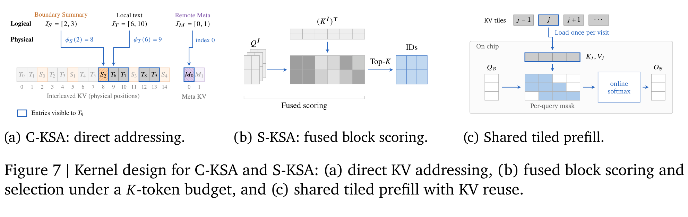
Figure 7: Kernel design for C-KSA and S-KSA: (a) direct KV addressing, (b) fused block scoring and selection under a $K$-token budget, and (c) shared tiled prefill with KV reuse. (a) 是地址映射：上方示意逻辑区间 $I_S=[2,3)$、$I_T=[6,10)$、$I_M=[0,1)$，中间一行给出物理落点（如 $\phi_S(2)=8$、$\phi_T(6)=9$、Meta 的 index 0），下方才是真正交错的物理存储序列——把逻辑索引和物理偏移分开看，就能理解为什么不需要 index 表。(b) 是 S-KSA 的融合打分：$Q_I$ 与共享块键 $K_I$ 相乘得到"query × 候选块"的灰度分数矩阵，随后在同一次 kernel 内完成 Top-$K$ 选块，右侧蓝底 IDs 矩阵的每一行 对应一个 query 选出的块索引（每个 query 独立选）。(c) 是共享的 tiled prefill：$Q_B$/$O_B$ 里每格一个 token 向量，蓝格为可见对、白格为被 mask 的对，KV tile $K_j,V_j$ 被"Load once per visit"后在片上复用，配合 per-query mask 完成 online softmax。 报告 p.10
映射完成之后，每个 query tile 就知道自己要访问哪些 KV tile 范围，再由基于位置的 mask 排除掉不在该 query 可见集合内的条目。论文强调：这些区间和 mask 全部在 kernel 内部现算，不占显存 ——不需要存一张稠密的 attention mask，也不需要一张 block-index 表。
13.3 C-KSA：prefill 整合与 decode
prefill 阶段，文本 query 的 kernel 把每个 query 的 online-softmax 状态跨越 text、Summary、Meta 三段连续携带 （这是三类条目共用一次 softmax 在实现上的对应物），并且只对 Meta logit 施加 $\log k_m$ 修正 。另有一个独立的本地 kernel 负责让每个 Summary query 在自己 chunk 的文本和 self-KV 上做注意力。两个 kernel 都把输出直接写回交错的物理位置 。
decode 阶段几乎不需要特殊处理：第 13 节的 cache 布局已经把可见 KV 放在一片连续区域 里，所以直接用标准的 scaled dot-product attention（SDPA）就行，不需要 gather。
公式 (11)(12) 与第 13 节布局是同一件事的两面。 布局保证了"可见 KV 连续"，映射公式保证了"能算术地找到它"。两者缺一不可：只做前者，kernel 仍然要扫一遍找边界；只做后者，Fast Path 又会退化成多次非连续读取。这是全篇"算法—布局—kernel"三者协同最紧的一处。
13.4 S-KSA：融合打分 + 稀疏 tile 调度
Fused block scoring。 如果先用一个 kernel 算点积、再用另一个 kernel 做多头聚合，中间分数必须落到显存里往返一趟。为了减少这部分访存，S-KSA 用一个融合 kernel，在片上同时完成点积与加权多头分数合并 。图 7b 里 $Q_I$ 是 indexer 各头堆叠后的 query 矩阵，$K_I$ 是它们共享的块键（上标 $I$ 表示 indexer）；中间的灰度矩阵行是 query、列是候选块 ，颜色越深分数越高；随后在一次 kernel 内 完成选择：在 $K$ 个 token 的预算下（即最多 $K/b$ 个块），为每个 query 独立 选出远端块，右侧蓝底矩阵的每一行就是一个 query 的块索引列表。
"融合"在这里省的是什么？ 省的是那块 $Q \times \text{块数}$ 的中间分数矩阵的写入与回读。在 128K、块数 32768 的量级下，这张矩阵即使只用较低精度也相当可观；而且它是纯中间产物 ，写出去再读回来对结果毫无贡献。融合之后，分数在片上产生、在片上聚合、在片上完成 Top-$K$，只有最终的块索引需要落地。
KV-tile 调度。 对每个 query 组，把它选中的远端块和本地窗口映射到 KV tile 上，构造一份保守的访问顺序表（conservative schedule） 。这份表会跳过完全无人访问的 KV tile，而块选择、本地可见性、因果性这些约束全部由 per-query mask 在已调度的 tile 内兜底。这份调度表与 mask 被直接喂给 FlashAttention 的 forward kernel 执行 tiled prefill。
Decode 期的 custom sparse kernel。 decode 阶段如果先把选中的 KV 条目 gather 到临时 buffer 再算注意力，会额外付出一轮读 + 一轮写。为了绕开这笔开销，S-KSA 用一个自定义稀疏 kernel，依据选中的块索引直接从 KV cache 里读 。
把这一节的三件事按"省什么"重新归类，会更清楚： 融合打分 省的是中间分数的显存往返 （带宽）。tile 调度 省的是对空 tile 的计算与加载 （算力 + 带宽）。自定义 sparse kernel 省的是gather 带来的额外读写 （带宽）。搬运 。这正是长上下文推理最终的性能瓶颈所在，也是这一节值得单独存在的原因。
最后，把第 14 节和第 13 节连起来看，还剩一个值得记住的定性结论：KSA V2 剩下的主要成本，是稀疏层保存的那部分原始文本 KV ——也就是公式 (10) 里那个 $f$ 项在新架构下的化身。论文在结论里把它点名为一个自然的后续方向。
第 15 节 实验设置与 adaptation 协议：把已有模型改造成 KSA V2论文的实验章开篇就把问题设定讲得很清楚：它并不训练一个新架构，而是问一个改造（retrofit）问题——继续预训练能不能把已有的 Hybrid KSA 适配到更激进的 KV 压缩与稀疏原文访问上，同时保住原有能力 。实验路线是先验证 C-KSA 配 Full 注意力，再在压缩后的骨架上叠加 S-KSA，最后从检索、通用能力、推理效率三条线分别评估，并补做压缩粒度、block 大小、teacher pooling、路由方式与骨架选择的消融。除特别说明外，全部实验与分析都跑在 1.9B 模型上。
起点是 KSA 报告中 1.9B 与 4B Hybrid KSA 的 128K checkpoint。1.9B 骨架是 24 层 MHA ；4B 骨架是 36 层 GQA ，32 个 query head 配 8 个 KV head。两者都是 3 个 KSA 层夹 1 个 Full 层的 3:1 交错结构，并且每 $k_s = 8$ 个文本 token 插入一个 Summary。评估的变体有两个：C-KSA+Full 在 KSA 层里把远端 Summary KV 压成 Meta 条目；C-KSA+S-KSA 进一步把 Full 层替换成 S-KSA，即块级稀疏的原文注意力。值得注意的是，C-KSA 在方法上支持逐层不同的压缩配置，但论文明确说明每个被评测的配置在各 C-KSA 层上使用统一的 $k_m$ ——这一点在下文的「值得补测」里还会回来。
评测沿用 KSA 报告的口径：长上下文用 RULER ，序列长度从 4K 到 128K；通用能力覆盖知识（MMLU、CMMLU、C-Eval、MMLU-Pro）、数学（GSM8K、CMATH、MATH）与代码生成（MBPP、HumanEval，报 pass@1），合计 9 个基准。baseline 复用了 KSA 的从零训练结果（1.9B）与继续预训练结果（4B），包含 Full、Hybrid SWA、Hybrid SCA、Pure KSA、Hybrid KSA，1.9B 另加 Hybrid GDN、4B 另加 Hybrid Linear。Hybrid KSA 被定位为「能力保留」的父模型参照，Full 则是稠密注意力参照 ；训练数据沿用 KSA 的语料与配比，上下文长度固定 128K。
关于参照系，论文做了一件很关键的事：它专门验证了「继续预训练父模型」能否成为一个更强的对照。见本节末尾的 Table 11 讨论——在测试的配方与数据预算下，未改动的 Hybrid KSA 继续预训练并没有 带来一致的 RULER 提升，因此论文有理由直接拿原始 checkpoint 当质量参照。这个论证不华丽，但堵住了「你们多训了所以变好」的质疑。
先看两个尺度的骨架与模块配置（完整配置见第 12 节的 Table 2，此处不重复）。1.9B 是 24 层 MHA，hidden 2048、中间层 6144，16 个 query head 配 16 个 KV head；4B 是 36 层 GQA，hidden 2560、中间层 9728，32 个 query head 配 8 个 KV head，两者 head 维度都是 128、都是 3:1、$k_s$ 都是 8。差异最大的地方在 C-KSA 与 S-KSA 的模块配置：1.9B 的 $k_m = 128$、KV 宽度 $d_{KV} = 2048$，4B 则为 $k_m = 32$、$d_{KV} = 1024$。
看 Table 3 的阶段预算，能看出这次改造的「便宜」程度。C-KSA 的新增参数是每个尺度上的聚合投影与位置偏置，1.9B 为 80.2M、4B 为 71.7M；S-KSA 的辅助注意力、Indexer 与路由相关参数，1.9B 为 86.6M、4B 为 163.0M。相对 1.9B 与 4B 的骨架规模，这是几个百分点量级的增量，而换来的推理收益在后面的效率节会看到。
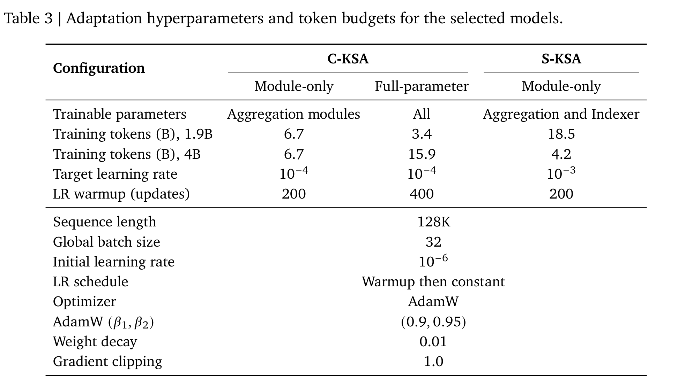
Table 3: Adaptation hyperparameters and token budgets for the selected models. 三个阶段的可训练范围与 token 预算。1.9B：C-KSA module-only 6.7B token，随后 full-parameter 3.4B token，再叠 S-KSA module-only 18.5B token；4B：C-KSA module-only 6.7B + full-parameter 15.9B，S-KSA module-only 4.2B。三阶段目标学习率分别为 $10^{-4}$、$10^{-4}$、$10^{-3}$，均从 $10^{-6}$ 起始、先 warmup 后恒定，AdamW $(\beta_1, \beta_2) = (0.9, 0.95)$、weight decay 0.01、梯度裁剪 1.0、序列长度 128K、全局 batch 32。论文特别说明：每次阶段切换都重新初始化优化器与学习率调度 ——这也是下面「为什么先对齐再放开」的一个副作用，阶段边界是硬边界而不是连续退化。 报告 p.14
上面这条改造路线在 Figure 8 里被画成了一条流水线。先说模块设置——「按用到的模块生效」这句话不是客套：module-only 阶段只训练新引入的聚合投影 $A$ 与位置偏置 $\{B_r\}$（S-KSA 阶段则是新的聚合模块与 Indexer），其余继承参数一律冻结；full-parameter 阶段才放开整模。C-KSA 走「module-only → full-parameter」，而 S-KSA 阶段只用 module-only 。
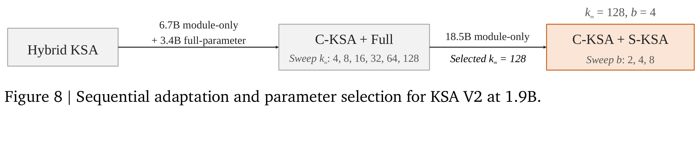
Figure 8: Sequential adaptation and parameter selection for KSA V2 at 1.9B. 1.9B 的顺序 adaptation 路线：从 Hybrid KSA 出发，先用 6.7B module-only + 3.4B full-parameter 得到 C-KSA+Full，其间扫描 $k_m \in \{4, 8, 16, 32, 64, 128\}$ 并选定 $k_m = 128$；再从该 checkpoint 出发，用 18.5B module-only 得到 C-KSA+S-KSA，其间扫描 $b \in \{2, 4, 8\}$ 并选定 $b = 4$。注意「先选压缩粒度、再选稀疏方案」的依赖关系：稀疏阶段的起点必须是已经选定的压缩 checkpoint，所以这张图既是流程说明，也是实验设计上的因果顺序。 报告 p.13
整条路线可以被概括成一句话：每一段 adaptation 都只解决一个新引入的模块，且每个超参的扫描都在它上一步确定之后进行 。这样做的代价是实验轮数变多（压缩粒度 6 档 × 稀疏 3 档），收益是每一步的结论不会互相污染。
第 16 节 两阶段损失：先对齐输出，再放开整模改造一个预训练模型最怕的是「一放开就把原来学好的东西冲掉」。KSA V2 的对策是分两段：模块阶段让新模块先把输出对齐 到未压缩版本，等对齐完成再放开全部参数做常规语言建模。这一段值得逐式看清楚。
module-only 阶段训练的是聚合投影 $A$ 与位置偏置 $\{B_r\}$，继承参数全部冻结。新参数初始化为零 ，于是初始状态下聚合权重是均匀的（这也解释了为什么需要对齐损失：均匀聚合并不能复现原来那么多 Summary 条目的信息）。设 $O^{C}_{l,t,d}$ 与 $O^{K}_{l,t,d}$ 分别是 C-KSA 与未压缩 KSA 在第 $l$ 层、第 $t$ 个文本位置、第 $d$ 个坐标上的注意力输出，两者都由同一层的同一份输入 算出、且都取在输出投影之前。对齐损失定义为各坐标平方误差（先 clip 再平均）：
$$
\mathcal{L}_{\text{align}} = \frac{1}{|\mathcal{I}_C|\,|\mathcal{T}|\,D} \sum_{l \in \mathcal{I}_C} \sum_{t \in \mathcal{T}} \sum_{d=1}^{D} \min\!\left( \left( O^{C}_{l,t,d} - \mathrm{sg}\!\left( O^{K}_{l,t,d} \right) \right)^2,\ 0.1 \right)
$$
其中 $\mathcal{I}_C$ 是 C-KSA 层的集合，$\mathcal{T}$ 是一个 minibatch 内的文本位置，$D$ 是拼接后的注意力宽度，$\mathrm{sg}(\cdot)$ 表示 stop-gradient。这里有三个设计细节都很实用：误差按坐标 算而不是按向量算，因此不涉及范数尺度的选择；每项误差在上限 $0.1$ 处被 clip，避免个别离群坐标主导梯度；对参考侧做 stop-gradient，保证梯度只往新模块回传，不会把冻结的 KSA 侧「拖走」。
对齐完成后进入 full-parameter 阶段，目标函数退回纯语言建模：
$$
\mathcal{L}_{\text{comp}} =
\begin{cases}
\mathcal{L}_{\text{CE}} + \lambda_{\text{align}} \mathcal{L}_{\text{align}}, & \text{module-only adaptation}, \\
\mathcal{L}_{\text{CE}}, & \text{full-parameter adaptation},
\end{cases}
\qquad \lambda_{\text{align}} = 5
$$
换句话说，对齐损失只在 module-only 阶段存在，权重取 5；一旦放开整模就完全撤掉，只留交叉熵 。为什么是这个顺序，而不是一开始就联合训练？一个直接的读法是：如果一上来就放开整模并同时施加对齐项，冻结参照 $O^{K}$ 本身也在动，对齐目标就成了移动靶，且语言建模梯度会立刻改写 KSA 侧的表征，让「对齐」失去明确的参考点。先把新模块拉到「与原行为近似等价」的位置，再放开整模，等价于从一个已经接近原模型的点继续训练，遗忘风险最小。这也和 Table 3 里「每次阶段切换都重新初始化优化器与学习率调度」相配合：阶段边界被当作重新出发，而不是一次连续退火。
S-KSA 阶段的目标函数结构不同，它是一个蒸馏 问题而不是回归问题。训练时 Full 层仍保留稠密注意力，用它算出的概率来监督 block 选择。对 query $t$，令 $\mathcal{U}_t$ 为所有合法的远端 block，$\mathcal{B}_u$ 为 block $u$ 内的文本位置，$a_{t,i}$ 为跨骨架头平均后 的稠密因果注意力概率。则 block 级 teacher 分布 $p_t$、Indexer 分布 $\pi_t$ 与训练目标为：
$$
p_{t,u} = \mathrm{sg}\!\left( \frac{\max_{i \in \mathcal{B}_u} a_{t,i}}{\sum_{v \in \mathcal{U}_t} \max_{j \in \mathcal{B}_v} a_{t,j}} \right),
\qquad
\pi_t = \mathrm{softmax}(\rho_t),
\qquad
\mathcal{L}_{\text{S-KSA}} = \mathbb{E}_{l,t}\!\left[ D_{\mathrm{KL}}(p_t \,\|\, \pi_t) \right]
$$
其中 $\rho_t$ 是公式 (7) 定义的 Indexer 分数，对 $\mathcal{U}_t$ 中的所有 block 取值；$\mathrm{sg}(\cdot)$ 依然是 stop-gradient。损失先在每个被适配层内对有效文本 query 求平均，再跨层平均。这里有两点值得点出来：其一，teacher 是在「按头平均之后」取 block 内最大值 （max pooling），论文说明这一做法follows QSA ，并在 3.7 节用 sum pooling 做了对照；其二，$\pi_t$ 只在训练时存在，推理时训练好的 Indexer 直接选 block，**路由分数不会被当作额外的注意力权重**——主注意力仍然是在选中的原文 token 与局部窗口上做单次 softmax。
为什么先对齐再放开（整理）： 把这两段损失并排看，会发现论文其实在解耦两件互相干扰的事——「新模块的输出要像老模块」与「整模要继续学好语言建模」。前者是一个有明确参照的回归/蒸馏问题，适合在其余参数冻结时快速收敛；后者需要全部参数协同，适合在没有额外约束时进行。分阶段做，等于把两个优化问题错开，而不是让它们在同一批梯度里互相拉扯。
还有一个容易忽略的实操差异：S-KSA 阶段的 token 预算是三个阶段里最大的——1.9B 上 18.5B token，而 C-KSA 的两个阶段加起来只有 10.1B。也就是说，论文把大部分 adaptation 预算花在了「教 Indexer 怎么选块」上 ，而不是花在压缩模块上。这个预算分配本身就说明了稀疏路由的难度。
第 17 节 模型质量：1.9B 与 4B 上到底保住了多少结论先放在 Table 4 上：1.9B 上 C-KSA+S-KSA 的六长度 RULER 均值是 72.39%，父模型 Hybrid KSA 是 72.61%，Full 是 67.55%；4B 上分别是 84.15%、84.45% 与 83.69%。 换句话说，改造后的模型把父模型的检索能力基本保住（1.9B 差 0.22 个百分点，4B 差 0.30 个百分点），同时仍然明显优于 Full。但这不是「无损」——128K 单点上有得有失，通用能力上也有可测的代价，下面逐条看。
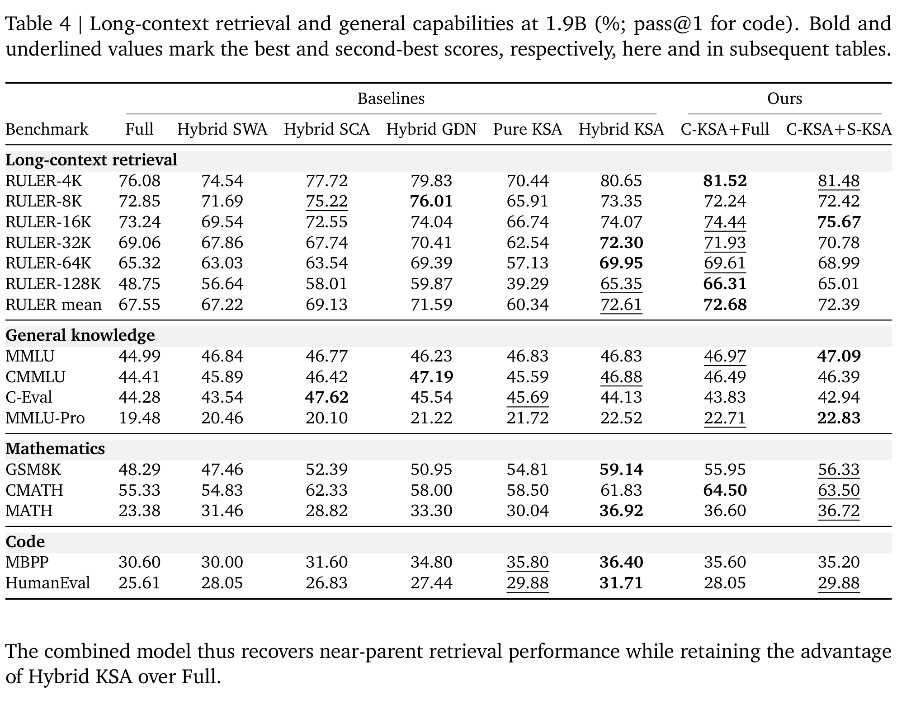
Table 4: Long-context retrieval and general capabilities at 1.9B (%; pass@1 for code). Bold and underlined values mark the best and second-best scores, respectively, here and in subsequent tables. 1.9B 全表，8 个 baseline 对 2 个 ours。RULER 六长度：C-KSA+S-KSA 为 81.48 / 72.42 / 75.67 / 70.78 / 68.99 / 65.01，均值 72.39；Hybrid KSA 为 80.65 / 73.35 / 74.07 / 72.30 / 69.95 / 65.35，均值 72.61；Full 均值仅 67.55、128K 只有 48.75。C-KSA+Full 均值 72.68、128K 66.31，说明只做压缩几乎不掉分 ，掉分主要发生在叠加稀疏之后（128K 由 66.31 降到 65.01）。 报告 p.15
把 RULER 逐长度摊开看，会更清楚「保住了什么、丢了什么」。相对父模型 Hybrid KSA，C-KSA+S-KSA 在 4K（81.48 vs 80.65）与 16K（75.67 vs 74.07）上更高，在 8K 基本持平（72.42 vs 73.35 略低），而在 32K、64K、128K 三个长端上分别低 1.52、0.96、0.34 个百分点。也就是说，损失集中在 32K–64K 这一段，128K 反而收得很紧 。而在纯 Full 注意力参照面前，它的优势是压倒性的：Full 在 128K 只有 48.75，比 C-KSA+S-KSA 低 16.26 个百分点。
C-KSA+Full 这一列很值得单独说（Figure 9(a) 给出了它的恢复曲线）。它保留了 Full 层，只在 KSA 层里把远端 Summary 从 $k_s = 8$ 进一步压到 $k_s k_m = 1024$，均值 72.68 甚至略高于父模型 72.61，128K 66.31 也高于父模型 65.35。这等于给出一个干净的单因素结论：1024× 的远端历史压缩本身几乎不付检索代价。 代价是在叠加 S-KSA 时才出现的——128K 从 66.31 掉到 65.01。而同样把稀疏适配加在未压缩的 Hybrid KSA 上，128K 是从 65.35 掉到 61.06（Table 9(c)）。两者相对各自稠密参照的跌幅是 1.30 与 4.29 个百分点：压缩过的骨架在做稀疏适配时反而更抗跌 。
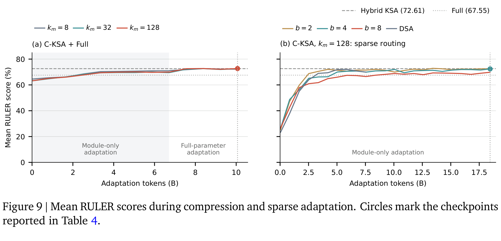
Figure 9: Mean RULER scores during compression and sparse adaptation. Circles mark the checkpoints reported in Table 4. (a) C-KSA + Full 的三条曲线对应 $k_m = 8, 32, 128$：module-only 阶段（0–6.7B token）检索分数持续回升，full-parameter 阶段（6.7–10.1B token）进一步逼近 Hybrid KSA 的 72.61 与 Full 的 67.55 两条参考线。(b) 在选定的 $k_m = 128$ 骨架上做 S-KSA，$b = 2, 4, 8$ 与 token 级 DSA 四条曲线对比，其中 $b = 4$ 在约 18.5B token 处接近父模型水平。这张图的价值在于它不是「训完看结果」，而是把恢复过程 画了出来：模块阶段就已经把大部分差距补回来，full-parameter 阶段是收尾。 报告 p.16
图 9 与 Table 3 的预算对上读，可以看到一个和直觉不太一致的现象：module-only 阶段（只训练 80.2M 的新增参数）就能把检索分数从压缩引入的低点显著拉回 ，而后面的 full-parameter 阶段贡献的是「逼近」而不是「翻身」。这与 3.7 节 oracle 实验的结论互相呼应——如果选择足够准，骨架甚至不需要更新。
通用能力方面，论文的表述是「大致可比」：C-KSA+S-KSA 相对 Hybrid KSA 在九项中三项更高（MMLU 47.09 vs 46.83、MMLU-Pro 22.83 vs 22.52、CMATH 63.50 vs 61.83），其余更低，最大跌幅是 GSM8K 的 2.81 个百分点 ，MBPP 与 HumanEval 分别低 1.20 与 1.83 个百分点。而相对 C-KSA+Full，加 S-KSA 后每一项的变化都不超过 1.83 个百分点，且各有升降，说明并不是稀疏适配导致了系统性下滑。相对 Full，它在九项中赢下八项，唯一例外是 C-Eval（42.94 vs 44.28）。
1.9B 小结： 「压缩」这一步接近免费（均值 +0.07 、128K +0.96 相对父模型，两项都是增益），「稀疏」这一步要付一点检索代价（128K −1.30），通用能力上各有一两个百分点的波动。所有代价都发生在把 Full 层也换掉之后，而不是压缩本身。
4B 的实验（Table 5）回答的是另一个问题：这套改造能否迁移到共享 KV head 的 GQA 骨架 上。配置是 $k_m = 32$、$b = 4$，配 $k_s = 8$ 时 C-KSA 在序列维度上把远端 KV 压了 $8 \times 32 = 256$ 倍，同时保留 GQA 的共享 KV head。token 预算是 6.7B module-only + 15.9B full-parameter，之后再叠 4.2B 的 S-KSA module-only；远端预算、局部窗口与 sink 设置与 1.9B 保持一致；唯一的架构差异是 4B 的 Indexer 额外对投影后的 query/key 做了归一化。
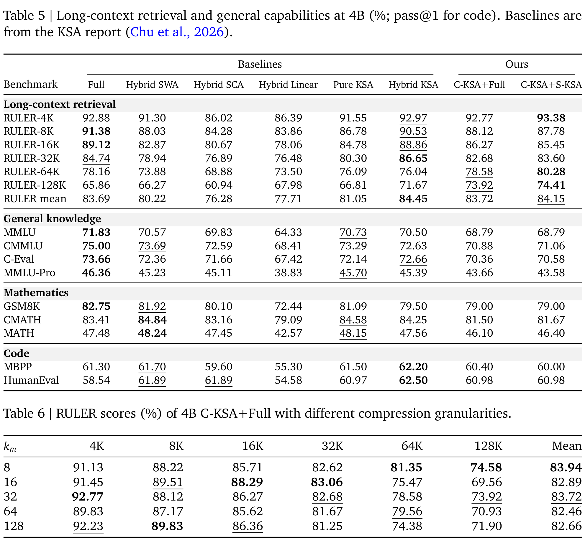
Table 5: Long-context retrieval and general capabilities at 4B (%; pass@1 for code). Baselines are from the KSA report (Chu et al., 2026). 4B 全表。RULER 六长度上 C-KSA+S-KSA 为 93.38 / 87.78 / 85.45 / 83.60 / 80.28 / 74.41，均值 84.15；父模型 Hybrid KSA 均值 84.45，C-KSA+Full 83.72，Full 83.69。最亮的是 128K 单点：74.41 比父模型的 71.67 高 2.74 个百分点，比 Full 的 65.86 高 8.55 个百分点，也高于自己的 C-KSA+Full 起点 73.92。稀疏适配在大模型上不但没掉 128K，反而涨了 。 报告 p.17
4B 的 128K 反转很值得注意。在 1.9B 上，加 S-KSA 让 128K 从 66.31 掉到 65.01；在 4B 上，同一动作让 128K 从 73.92 升到 74.41。「稀疏一定掉分」不是普遍规律，它与骨架、数据预算和 Indexer 配置一起决定。 不过均值这一栏仍然是小幅回落（84.15 vs 84.45），主要拖累来自 8K、16K、32K 三段（87.78 / 85.45 / 83.60，对应父模型 90.53 / 88.86 / 86.65），而 4K（93.38 vs 92.97）与 64K（80.28 vs 76.04）都是上升的。
通用能力上，论文给出的口径是：C-KSA+S-KSA 与 C-KSA+Full 的差距在 0.40 个百分点以内，比 Hybrid KSA 低 0.50–2.58 个百分点。C-KSA+Full 本身已经比父模型低了一些（例如 MMLU 68.79 vs 70.50），所以这部分的损失更多来自压缩阶段的全参数训练，而不是稀疏阶段。
然后是那个「事后才补上」的关键设置——Indexer 的 Q/K 归一化 。论文坦白地给出了一组对照：不做 Q/K 归一化时，4B 的 Indexer loss 一直偏高，即使训到 21.8B adaptation token，RULER 仍低于它的 C-KSA+Full 父模型 ；在同样的适配设置下，对投影后的 query/key 做归一化后，只用 4.2B token 就恢复到接近父模型的水平 。论文给的解释是不同预训练骨架之间的特征尺度差异会影响 index-logit 的量级与优化，RMSNorm 降低了这种尺度敏感性。更值得记下来的是论文自己划的边界：1.9B 仍沿用原设置，没有用这个改动重跑完整的实验套件；归一化能否同样减少 1.9B 所需的适配数据，被明确写成 open question。 这是一个诚实的缺口，也是一条很具体的复现风险。
最后是压缩粒度在 4B 上的选择。Table 6 用同一套预算（每个配置都是 6.7B module-only + 15.9B full-parameter）比较了 $k_m \in \{8, 16, 32, 64, 128\}$。
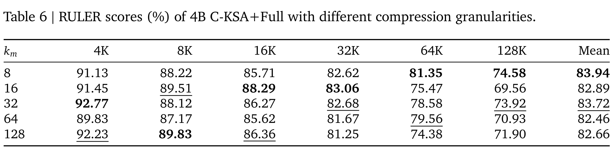
Table 6: RULER scores (%) of 4B C-KSA+Full with different compression granularities. $k_m = 8$ 均值 83.94，$k_m = 32$ 均值 83.72，两者只差 0.22 个百分点，但 $k_m = 32$ 把远端 Meta 条目数又减少了 4 倍——所以论文选 $k_m = 32$。其余档位：16 为 82.89、64 为 82.46、128 为 82.66，均低于两者。逐长度看，$k_m = 32$ 的 128K 为 73.92 高于 $k_m = 8$ 的 74.58 之外的大多数档位（16 为 69.56、64 为 70.93、128 为 71.90），说明更细不一定更好，128K 这一列反而对粗粒度更友好 。 报告 p.17
把 Table 6 和 Table 9(a) 并起来看，两个尺度上的粒度敏感性差异很明显：1.9B 上 $k_m$ 从 4 扫到 128，RULER 均值只在 71.92–72.74 之间波动、没有系统性下滑 ；4B 上从 8 扫到 128，均值在 82.46–83.94 之间，最优是$k_m = 8$。论文对 1.9B 那个「不敏感」给了个推测性解释：Full 层仍然能读到被压缩过程中丢掉的原文细节，因此压缩粒度的影响被稀释。而 4B 这一侧，选择 $k_m = 32$ 的理由是收益/成本比 ——多压 4 倍几乎不掉分。
第 18 节 长上下文检索分析与推理效率均值分数会掩盖位置维度的差异，所以论文补了一张 NIAH 网格（Figure 10）和一张 128K 子任务配对表（Table 7）。先看网格：它在六个上下文长度（4K 到 128K）× 十一个插入深度（0% 到 100%）上，用完全相同的输入比较各模型。
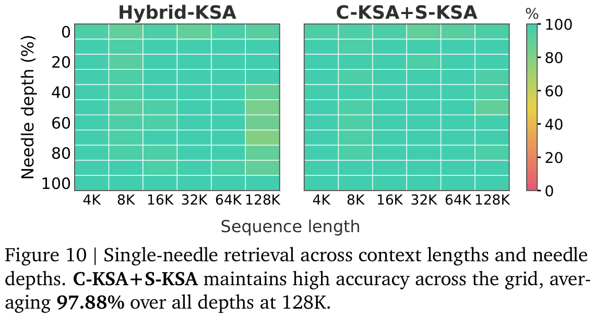
Figure 10: Single-needle retrieval across context lengths and needle depths. C-KSA+S-KSA maintains high accuracy across the grid, averaging 97.88% over all depths at 128K. 左为 Hybrid KSA、右为 C-KSA+S-KSA，六个上下文长度（4K–128K）× 十一个插入深度（0%–100%）的单针检索网格。两者都在整张网格上保持了很高的准确率，C-KSA+S-KSA 在 128K 上跨全部深度的平均值为 97.88% 。这张图回应的是「稀疏选块会不会在某个深度上系统性失手」——从网格看没有出现某个深度带整体塌陷的模式。 报告 p.18
网格之外，Table 7 用 RULER-128K 的六个子任务做了配对比较。这里既有好消息也有明确的坏消息。
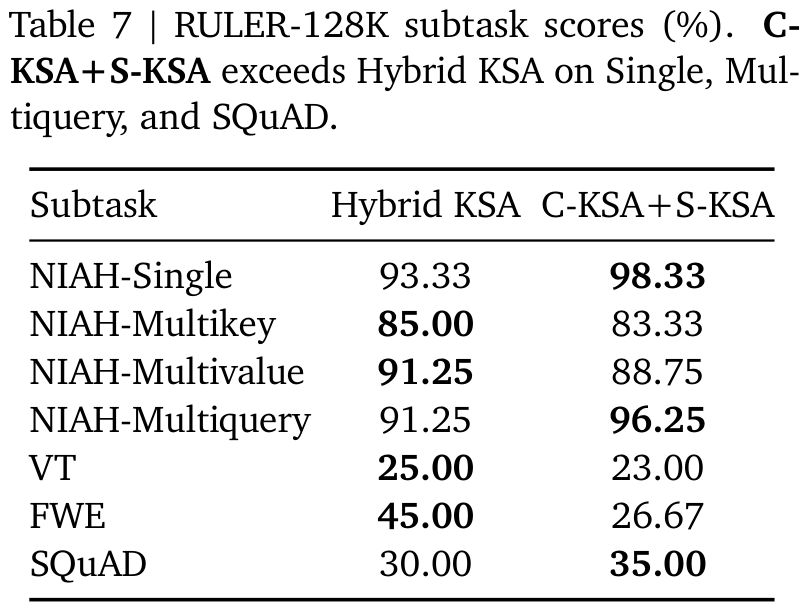
Table 7: RULER-128K subtask scores (%). C-KSA+S-KSA exceeds Hybrid KSA on Single, Multiquery, and SQuAD. 六项配对结果：NIAH-Single 93.33 → 98.33、NIAH-Multiquery 91.25 → 96.25、SQuAD 30.00 → 35.00 三项上升；NIAH-Multikey 85.00 → 83.33、NIAH-Multivalue 91.25 → 88.75 小幅下降；FWE （频繁词提取）从 45.00 掉到 26.67，是全部对照中最大的退化 报告 p.18
失败模式（诚实记录）： FWE 的 45.00 → 26.67 是 18.33 个百分点的绝对下跌，接近腰斩，而且它不是噪声级别的波动。论文在两处点到了它：贡献部分写「聚合密集的任务如频繁词提取在块选择下退化」（aggregation-heavy tasks such as frequent-word extraction degrade under block selection），3.7 节的 Failure mode 则给出量化描述——「最大的 128K 子任务跌幅是频繁词提取，从 45.00% 降到 26.67%，这是一个聚合任务」。也就是说，论文指出了现象、给出了归因标签（聚合任务），但没有给出机理层面的解释，也没有针对这类任务提出修复方案 。结合 Table 7 其余五项的走向，一个合理的读法是（本页整理 ，非论文结论）：块级稀疏选的是「少数高权重位置」，对「需要在整段上下文上做统计累加」的任务天然不利，因为聚合要求的信息分布更弥散。这条线索也值得和第 20 节里 HiLS-Attention 的 entropy-corrected chunk weights 联系起来看——那篇工作恰恰是在给块权重做熵修正。
同时也要公平地说清楚：FWE 这一项的绝对水平本来就低（父模型也只有 45.00），VT 一项两者也都在 25 附近（25.00 → 23.00）。这两项在 128K 下对两个模型都是困难任务，所以这张表的正确读法是「检索型任务上稀疏改造是净收益，聚合型任务上要额外小心」 ，而不是「整体退化」。
接下来是效率（Figure 11），这也是 KSA V2 最主要的卖点。测量口径要先说清楚：1.9B 模型、BF16、batch size 为 1、单张 NVIDIA H800 ，序列长度从 16K 到 128K，C-KSA+S-KSA 用 $k_m = 128$ 与 $b = 4$。缓存测量包含了 indexer、辅助状态、KV 存储与常驻 workspace。
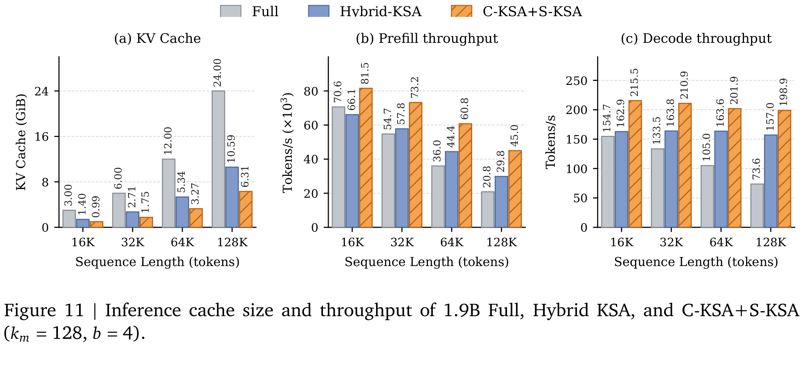
Figure 11: Inference cache size and throughput of 1.9B Full, Hybrid KSA, and C-KSA+S-KSA ($k_m = 128$, $b = 4$). 三面板分别是 (a) KV cache 常驻大小、(b) prefill 吞吐、(c) decode 吞吐，均横跨 16K/32K/64K/128K。(a)：128K 时 C-KSA+S-KSA 为 6.31 GiB，Hybrid KSA 10.59 GiB，Full 24.00 GiB；更细的刻度显示 Full 从 16K 的 3.00 GiB 一路涨到 24.00 GiB，而 C-KSA+S-KSA 从 1.40 GiB 到 6.31 GiB，增长斜率明显更缓。(c) 中 128K 的 decode 为 198.9 tok/s（C-KSA+S-KSA）对 157.0（Hybrid KSA），Full 在该面板没有可比数值。 报告 p.18
缓存。 128K 时 C-KSA+S-KSA 的常驻缓存是 6.31 GiB ，Hybrid KSA 为 10.59 GiB，Full 为 24.00 GiB，相对两者分别减少 40.4% 与 73.7% 。40.4% 这个数字与摘要里给出的「resident cache size 降低 40.4%」是同一个口径。需要提醒的是，这里的 6.31 GiB 并不是纯理论值：它包含了 indexer、辅助压缩状态与常驻 workspace，也就是把 C-KSA 的额外开销一并算进去之后的净结果。
Prefill。 128K 时 C-KSA+S-KSA 达到 44,971 tokens/s ，Hybrid KSA 为 29,837，Full 为 20,830，相当于 Full 的 2.16× 。相对 Hybrid KSA 的增益随长度增长：16K 时是 1.23×，到 128K 扩大到 1.51× 。这个「随长度增长」的形态是合理的——稀疏访问的收益本来就随序列变长而放大。
Decode。 C-KSA+S-KSA 在 16K 为 215.50 tokens/s 、128K 为 198.85 tokens/s ，Hybrid KSA 对应 162.87 与 157.02；四个序列长度上给出的加速区间是 1.23–1.32× 。摘要中的口径是「1.27× decode throughput」，落在该区间内。另外 Figure 1 给出的整体口径是单 token 推理 FLOPs 与 cache size 分别为 2.3× 与 2.9× 更小（相对参照系），与本节数字方向一致但口径不同，引用时不要混用。
论文还给出了更细的算力账：在 128K 下，C-KSA+S-KSA 每文本 token 的估计矩阵 FLOPs 比 Full 低 6.38 倍、比 Hybrid KSA 低 2.76 倍 ；BF16 的 KV 缓存与 index-key 缓存分别小 3.86 倍 与 1.35 倍 。值得注意最后这个 1.35——index-key 缓存本身也占到一定规模，并不为零。此外在 Table 7 的同一批设置下，C-KSA 的远端历史压缩率从 $k_s = 8$ 提升到 $k_s k_m = 1024$。
效率小结： 128K 下 40.4% 的常驻缓存缩减、1.51× prefill、1.23–1.32× decode，都是同一套 1.9B / BF16 / batch=1 / 单 H800 口径下测出来的。这套口径同时是这组数字的边界：batch size 1 意味着没有覆盖连续批处理场景 ，这一点在第 21 节会作为待补测项列出。
第 19 节 分析与消融：层级压缩、路由选择与 oracle 实验这一节是全文信息密度最高的部分。它回答四个问题：层级压缩是不是比直接加大 chunk 更好？$k_m$ 该取多大？稀疏方案与 teacher pooling 怎么选？以及最关键的一个——如果选择够准，能不能连骨架都不用改？
问题一：直接粗粒度 vs 层级压缩。 要拿到 1024× 的远端压缩，一条更简单的路是把 Summary chunk 直接设成 $k_s = 1024$。Table 8 把这条「一步到位」的路和 C-KSA 的「两级压缩」放在一起比，三者都保留 Full 层；大 chunk 模型是从零训练的，C-KSA 则建立在 $k_s = 8$ 的 Hybrid KSA 之上。
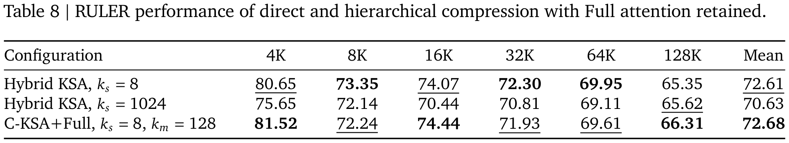
Table 8: RULER performance of direct and hierarchical compression with Full attention retained. 三行对照：$k_s = 8$ 的 Hybrid KSA（参照）均值 72.61；直接加大到 $k_s = 1024$ 的均值只有 70.63；C-KSA+Full（$k_s = 8$、$k_m = 128$）均值 72.68。也就是说在同样的 1024× 远端压缩率下 ，层级压缩比直接粗粒度高出 2.05 个百分点，并且追平了小 chunk 参照。差得最明显的是 4K：75.65 对 81.52。 报告 p.19
论文对这个差距给的解释是「额外计算」：C-KSA 一方面以 8 为 summary chunk，会在输入序列层面引入更多 token；另一方面压缩后的 KV 还要再过一个额外的模块，相当于做了两步摘要。论文还提到这与 KSA 报告中 4B 的结论一致——把 $k_s$ 从 8 提到 64，会让 4K–64K 的 RULER 均值从 82.97 掉到 77.79。把这条放在实验章里是有价值的：它说明「压得更狠」和「一次压到位」不是同一件事，中间保留一层细粒度表示是有回报的。
问题二：$k_m$ 取多大。 Table 9(a) 在 C-KSA+Full 上扫了 $k_m \in \{4, 8, 16, 32, 64, 128\}$，六长度 RULER 均值落在 71.92–72.74 之间，没有随压缩率提高出现系统性下降 。论文的推测是 Full 层仍然提供了对被压掉的原文细节的访问通道。选择 $k_m = 128$ 的理由是边际收益：128K 时 $k_m = 128$ 每层只剩约 128 个 Meta 条目，再往上压也省不下多少缓存，所以更高的压缩倍率被留给百万 token 级上下文。
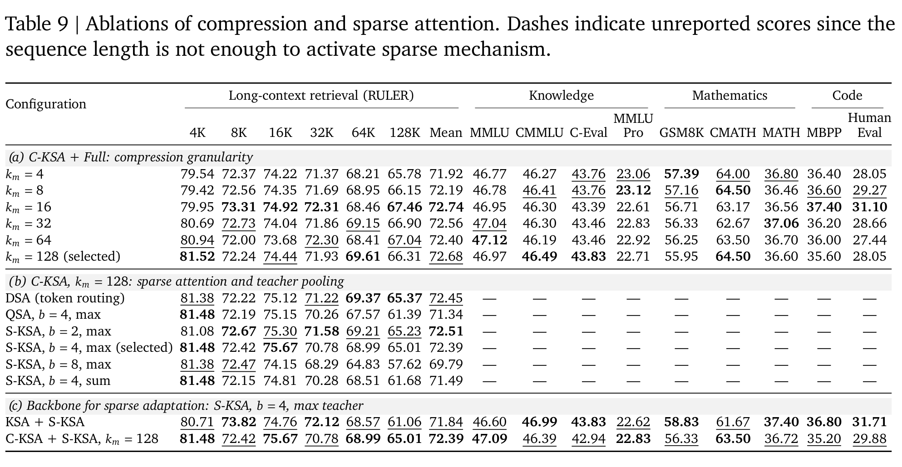
Table 9: Ablations of compression and sparse attention. Dashes indicate unreported scores since the sequence length is not enough to activate sparse mechanism. 三个面板：(a) $k_m$ 粒度，六档均值 71.92–72.74；(b) 稀疏方案与 teacher pooling，全部在同一个 $k_m = 128$ 的 C-KSA+Full 骨架上，含 token 级 DSA、QSA($b=4$, max)、S-KSA $b \in \{2,4,8\}$ 与 S-KSA sum 版；(c) 骨架选择——同样的 S-KSA 适配分别加在 KSA 与 C-KSA 上。面板 (b) 里 S-KSA $b = 8$ 是明显的坏点（均值 69.79、128K 仅 57.62），说明候选块太少会伤检索 ；面板 (c) 的 128K 是 65.01 对 61.06。 报告 p.20
问题三：block 大小与路由方案。 面板 (b) 在同一个骨架上比了 S-KSA 的 $b \in \{2, 4, 8\}$、token 级 DSA，以及 Qwen Sparse Attention（QSA）。QSA 提供的是一种更简单的替代：把每个 block 内投影后的 token 级 index key 做平均。论文按 Qwen 的 QSA indexer 设计用 $b = 4$、8 个 indexer head，与自身设置对齐。结果上，$b = 4$ 的均值与 $b = 2$、token 级 DSA 相当，但路由候选数分别是它们的一半和四分之一 ，并且在同样的 block 大小下优于 QSA（72.39 vs 71.34 均值，128K 65.01 vs 61.39）。继续加大到 $b = 8$ 会让候选数更少，但检索质量明显下滑，尤其 128K 只有 57.62。所以 $b = 4$ 是在检索质量与路由成本之间的折中。
此外，论文在这一面板只报 RULER，理由说得很直白：大多数通用能力的序列本身就落在远端加局部的总预算之内，对路由质量的区分度有限 。这是一个方法论上站得住的取舍，但也意味着这张表不能用来推断通用能力。
teacher pooling。 在 $k_m = 128$、$b = 4$ 下，论文把公式 (15) 的 max-pooled teacher（follows QSA）与 sum-pooled teacher（以 $\sum_{i \in \mathcal{B}_u} a_{t,i}$ 作为块权重）做了对照，两次训练只差在 pooling 上：max pooling 把均值从 71.49% 提到 72.39%、128K 从 61.68% 提到 65.01% 。论文的解释是检索依赖于少数显著 token，而 sum pooling 会被弥散的注意力稀释，这个结果也确认了 QSA 的选择在 KSA 骨架上同样成立。
问题四：骨架要不要改。 Table 9(c) 比较了把同样的 S-KSA 适配（$b = 4$、max-pooled teacher、18.5B token module-only、相同远端预算/局部窗口/sink）分别加在 Hybrid KSA 与 C-KSA+Full 上：C-KSA+S-KSA 均值 72.39、128K 65.01，而 KSA+S-KSA 是 71.84 与 61.06。相对各自的稠密参照，128K 的跌幅是 C-KSA 侧 1.30 个百分点、Hybrid KSA 侧 4.29 个百分点 。Figure 12(c) 给出了一个互补观察：在同一 token 预算下，oracle 选块在 C-KSA 上保留的 decode 注意力质量略多于 Hybrid KSA（含局部上下文与 sink），这与「稀疏适配后检索损失更小」一致。
Figure 12 与 Table 10 记录的是最有说服力的那组实验：冻结全部参数，直接用 Full 注意力的概率做选择 。token 选择按单点概率排序，block 选择按 $b = 4$ 个 token 一块取块内最大概率，与 Indexer 的 teacher pooling 规则一致。论文称之为 oracle selection，并与同一骨架的未改动 Full 层对比。远端预算 $K$ 含 8 个 sink token，另单独保留 1024 token 的局部窗口。
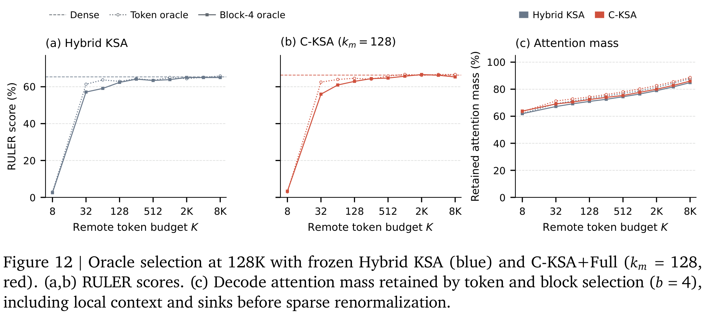
Figure 12: Oracle selection at 128K with frozen Hybrid KSA (blue) and C-KSA+Full ($k_m = 128$, red). (a,b) RULER scores. (c) Decode attention mass retained by token and block selection ($b = 4$), including local context and sinks before sparse renormalization. 横轴是远端 token 预算 $K$，从 8 一直到 8K，纵轴是 RULER 分数；(a)(b) 三条线分别是 Dense、Token oracle、Block-4 oracle。(c) 是不同 $K$ 下保留的 decode 注意力质量。关键读法：预算很小的时候分数崩塌，但 $K$ 一上去就迅速恢复 ——在 C-KSA 上 block 级选择在 $K = 512$ 就达到 64.71；到 $K = 4096$ 时几乎贴住密集参照。 报告 p.21
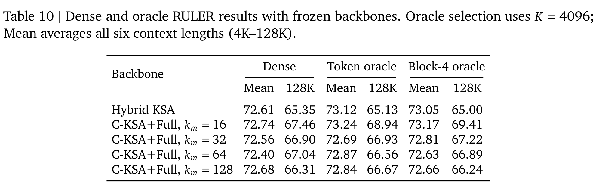
Table 10: Dense and oracle RULER results with frozen backbones. Oracle selection uses $K = 4096$; Mean averages all six context lengths (4K–128K). 五个骨架 × 三种选择方式（Dense / Token oracle / Block-4 oracle），每格给 Mean 与 128K。以 C-KSA+Full（$k_m = 128$）为例：Dense 72.68 / 66.31，Token oracle 72.84 / 66.67，Block-4 oracle 72.66 / 66.24。两种 oracle 选择在全部五个骨架上与密集参照的均值差都在 0.51 个百分点以内 ——而这五个骨架的参数是被冻结的、完全没有更新。 报告 p.21
这组数字的论证力在于它切割干净：如果只是「选得准」，那么连骨架适配都不需要，检索性能就能基本恢复到密集水平 。论文由此得到两个结论：一是准确的选择本身就能在没有骨架更新的情况下恢复接近密集的 RULER，包括在已经适配过 C-KSA 的模型上；二是全参数的稀疏继续训练在论文测试的配方与预算下并没有带来清晰的 RULER 提升 。两条合起来，支持把稀疏适配的力气集中在聚合模块与 Indexer 上，而不是去改骨架。
注意力质量那部分更直观：在 $K = 4096$ 时，被选中的远端 token 加上 1024 token 局部窗口只覆盖了 128K 上下文的约 3.9% ，却保留了 82.83% 的 decode 注意力质量，对应的 RULER 是 66.24 ，而密集注意力是 66.31 ——差 0.07 个百分点。同样预算下 Hybrid KSA 保留 81.71%。论文补了一句关键的限定：光靠局部上下文与 sink 本身就能保留相当可观的注意力质量，但检索表现很差 ，这反过来说明「选出相关的远端内容」才是稀疏注意力能否成立的关键，而不是「保留了多少质量」这个数字本身。
最后一组可视化把上面的结论落到具体例子上。Figure 13 在同一段 16K NIAH 样本上比较 Hybrid KSA 与主模型 C-KSA+S-KSA 的逐层注意力与选块（后者 $k_m = 128$、$b = 4$、$K = 4096$），两者都正确地从局部窗口之外取回了答案。
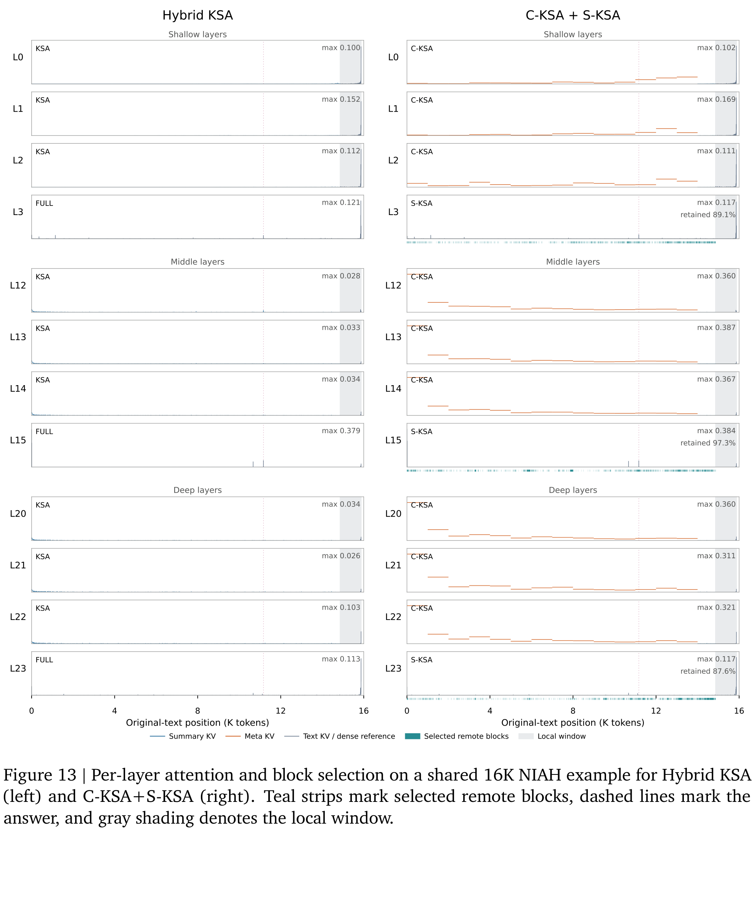
Figure 13: Per-layer attention and block selection on a shared 16K NIAH example for Hybrid KSA (left) and C-KSA+S-KSA (right). Teal strips mark selected remote blocks, dashed lines mark the answer, and gray shading denotes the local window. 左右两栏各展示浅层（L0–L3）、中层（L12–L15）、深层（L20–L23）四层，横轴是原文位置（0–16K token），颜色区分 Summary KV / Meta KV / Text KV。论文报告的要点：在所示浅层中 Meta 条目只拿到 C-KSA 注意力质量的 7.7–13.7%，而在中层与深层是 73.1–87.8% ，说明压缩后的远端记忆被实质性地使用；三个展示的 S-KSA 层里，选中的 block 都覆盖了答案跨度，与局部上下文一起保留了 87.6–97.3% 的密集注意力质量，但只访问了 31.5% 的原文位置 。 报告 p.22
Figure 13 里那个「浅层 vs 中深层」的差异很有意思（本页整理 ）：Meta 条目在浅层几乎不被使用（7.7–13.7%），到中深层才成为主导（73.1–87.8%）。这与「浅层更依赖局部与细粒度信息、深层才做粗粒度整合」的常见观察一致，也暗示逐层使用同一个 $k_m$ 未必是最优配置——但论文并没有据此做逐层不同 $k_m$ 的实验，这一点留到第 21 节。
最后是那个作为「参照系合法性」的对照实验（Table 11）。因为改编模型比 baseline 多训了，论文需要排除「多训就好」的解释，于是从同一个 128K checkpoint 出发，对未改动的 Hybrid KSA 做全参数继续预训练（全局 batch 256、峰值学习率 $4 \times 10^{-4}$、warmup–stable–decay 调度）。
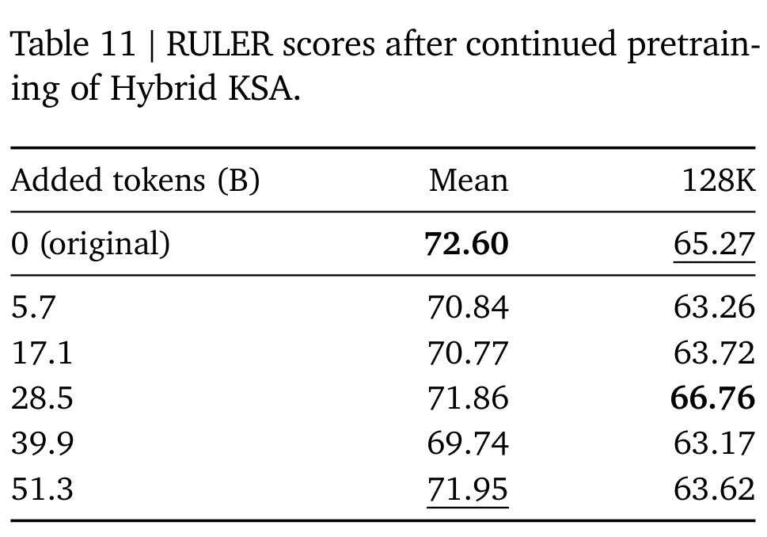
Table 11: RULER scores after continued pretraining of Hybrid KSA. 五个被评估的 checkpoint 覆盖 5.7–51.3B 新增 token。原始 checkpoint（0）均值为 72.60、128K 为 65.27；加训后均值分别为 70.84（5.7B）、70.77（17.1B）、71.86（28.5B）、69.74（39.9B）、71.95（51.3B），全部低于原始的 72.60 ；128K 只在 28.5B 时升到 66.76，更晚的 checkpoint 又回落（51.3B 为 63.62）。 报告 p.23
论文的结论是：在测试的配方与数据预算下，继续预训练并不能 让 Hybrid KSA 的 RULER 表现获得一致提升，因此用原始 checkpoint 作为质量参照是合理的。这个论证对整篇论文的可信度很关键 ——它把「我们多训了」这个最容易被质疑的点，转化成了一个可检验的对照，并且诚实地报告了「加训后反而略降」这个对自己不利的结果。
本节要点： （1）同样 1024× 压缩率下，层级压缩 72.68 优于直接粗粒度 70.63；（2）$k_m$ 在 1.9B 上不敏感（71.92–72.74），选 128 是出于边际缓存收益；（3）$b = 4$ 是质量/成本折中，$b = 8$ 明显变差（69.79）；（4）max pooling 优于 sum pooling（128K 65.01 vs 61.68）；（5）oracle 实验证明「选得准」本身就能接近密集性能（66.24 vs 66.31），骨架不必改；（6）那条 3.9% 位置 → 82.83% 注意力质量的数字，是理解 S-KSA 为何可行的核心。
第 20 节 技术来源一览：每个组件各自的出处KSA V2 不是凭空长出来的架构，它把一个已有混合骨架上的两处改造，分别嫁接在若干条已有研究线索上。论文行文里对每一处「借」都做了显式标注，本节把这些标注集中列出来，方便看清哪些是继承、哪些是这一代自己的选择。
先说整条主线的定位。Summary token 机制本身来自 KSA（Chu et al., 2026），Hybrid KSA 的 3:1 层间交错结构也来自同一篇；KSA V2 保留层结构不变，改的是两个组件——C-KSA 进一步压缩远端历史的 Summary KV，S-KSA 用 Summary 引导的块级稀疏替换原文上的稠密注意力。所以下表的读法是：「上游」是论文自己标注的出处，「本代改造」是 KSA V2 相对该出处做的不一样的事 。后一列是本页依据论文正文与 Related Work 整理的，不是论文里的原话。
KSA V2 各组件的论文标注上游与本代改造对照
组件 论文标注的上游 本代改造
Summary token 机制（整体骨架）
KSA（Chu et al., 2026）
保留 KSA 的 Summary 布局与 3:1 层间交错结构不变，把它同时当作可压记忆与路由索引两种角色来用；Summary 序列本身的粒度不被粗化。
C-KSA 的 dimension-wise 聚合
DeepSeek-V4（DeepSeek-AI et al., 2026）的 Compressed Sparse Attention (CSA) 与 Heavily Compressed Attention (HCA)
上游是对文本 token 的 KV 做学习到的逐维聚合，并在 CSA/HCA 两档上使用不同压缩粒度；C-KSA 把逐维聚合施加在 Summary KV 上，得到的 Meta 条目只在该构造层内部使用，不进入 hidden-state 序列，也不粗化层间传递的 Summary。
S-KSA 的 Lightning Indexer 路由
DeepSeek Sparse Attention / DSA （DeepSeek-AI et al., 2025）
上游的 Lightning Indexer 选的是单个 token ；S-KSA 把选择降到 block 粒度（$b$ 个 token 一个候选，候选比较数减少 $b$ 倍），并用 Summary 引导的块表示生成 index key。同时与 CSA 不同，S-KSA 的主注意力从不读取被压缩的文本，只读选中块的原始 KV。
block 级 max-pool teacher
QSA （Qiu et al., 2026）沿用 QSA 的「按头平均后取块内最大值」作为 teacher 分布，并用 KL 蒸馏训练 Indexer；论文另外用 sum pooling 做了对照，确认 max pooling 更优（128K 65.01 vs 61.68）。QSA 自身是把块内投影后的 token 级 index key 做平均，在本文里作为同 block size 的对照方案出现。
meta-gist 式的层级压缩思路
H-SSA（Mao et al., 2026）
上游插入 meta-gist token 来概括一组 gist token 并支持由粗到细的检索；C-KSA 不新增 token，而是把 $k_m$ 个 Summary KV 原地压成一条 Meta 条目，且该条目是层内私有的。
用记忆 token 作为检索接口
Landmark Attention（Mohtashami and Jaggi, 2023）
上游为代表每个上下文块引入 landmark token，并通过注意力到 landmark 来学习块检索；S-KSA 复用已有的 Summary（每个 chunk 本就有一个）承担这一接口角色，而不额外插入 landmark token。
tiled 执行
FlashAttention（Dao et al., 2022）
沿用其分块执行与在线 softmax；C-KSA 与 S-KSA 共享同一套 tiled prefill 执行路径，由 KV-tile 调度与前缀掩码实现块选择、局部可见性与因果性，另配自定义稀疏 decode kernel 直接按选中块索引读 KV cache 。
Summary 引导池化的类比
HiLS-Attention（Hu et al., 2026）
上游用 landmark query 去池化 token key，再用熵修正后的 chunk 权重合并块内注意力输出；S-KSA 相似之处在于用 query 池化块内 token，但复用已有 Summary 作 query 而非插入 landmark token，且路由分数只用于选块、不作为额外的注意力权重——主注意力在选中原文与局部上下文上做单次 softmax。
把这张表竖着看一遍，会浮现出两条比较清晰的差异线。
第一条：不新增 token。 H-SSA 加 meta-gist token、Landmark Attention 加 landmark token、HiLS-Attention 加 landmark query——这些上游方案都在序列里插入了新的结构。KSA V2 的 C-KSA 与 S-KSA 都复用已有的 Summary ：Meta 条目只在构造它的那一层内部存在、不往前传，路由用的块表示也是从既有 Summary 与块内 token 现算出来的。这带来的直接好处是 Summary 布局不变，因此改造可以 retrofit 到已经预训练好的 Hybrid KSA 上而不动序列长度——这也是论文把「retrofit 友好」列为卖点的技术根据。
第二条：路由分数不进注意力。 NSA 用学习到的块压缩引导细粒度选择并融合压缩、选择、局部三路注意力；HiLS-Attention 用熵修正的 chunk 权重合并块内输出；SAS 则在注意力归一化内部学习上下文排序。这些方案都会让路由信号参与最终输出的加权 。S-KSA 把这两件事分开：Indexer 的分数只决定「读哪些块」，主注意力随后在选中的原始 token 与局部上下文上做一次单次 softmax。论文在 Related Work 里明确写了这一点，它也是 S-KSA 能与 C-KSA 在同一个 tiled 执行路径上共存的前提之一。
溯源提醒： 本节只整理论文自己标注的引用关系。表中提到的上游方法本身是否与其被引用的版本完全一致、论文对每篇上游特征的描述是否准确，本页未做逐条比对。若需要据此判断新颖性边界，建议直接核对原文献。
另外值得留意的是论文对自身的定位口径：它在 Related Work 里主动区分了「与 DeepSeek-V4 的 CSA 不同」（主注意力从不读压缩文本）与「与 DSA 不同」（路由降到块粒度而非 token 粒度）。这两条差异不是修辞，它们分别对应第 19 节里可观测的两个结果——主注意力读原文是 RULER 能贴近密集参照的前提，块粒度路由是候选数降到 1/4 而均值不掉的来源。
第 21 节 点评：优势、局限与值得补测的空白这是一篇工程性很强的技术报告：它没有提出全新的注意力机制，而是把一个已有混合架构的两处瓶颈（压缩率被 chunk 大小绑死、Full 层照旧付二次方成本）分别解掉，并且把「改造是否伤害原有能力」当成一等公民来验证。下面分优势、局限两块说，最后单列一份「未披露、值得补测」的清单。
优势
1. Retrofit 友好，且成本可量化。 两个新组件都复用已有的 Summary，不新增 token、不改 Summary 布局，因此可以直接挂到预训练好的 Hybrid KSA 上。代价被写得很具体：C-KSA 新增参数 1.9B 为 80.2M、4B 为 71.7M；S-KSA 分别为 86.6M 与 163.0M；adaptation token 预算是 1.9B 的 6.7B + 3.4B + 18.5B。这是一份可以直接拿来做预算评估的清单，比「轻量适配」这种形容词有用得多。
2. 同一套 Summary token 被复用成两种角色，且不增加输入长度。 作为记忆，它被压成层内私有的 Meta 条目；作为索引，它被拿去构造块级路由表示。论文把这一点讲得比较克制，但它确实是全文最漂亮的设计选择——因为不新增 token，所以两条改造路线可以互相叠加而不冲突，也可以在同一个 tiled prefill 执行路径上共存。
3. 层级压缩优于直接加大 chunk，而且给出了对照实验。 Table 8 在同一个 1024× 远端压缩率 下比较「一步到位」与「两级压缩」：70.63 vs 72.68，差 2.05 个百分点。这条结论对做 KV 压缩的人有直接参考价值——它说明压缩路径的形状（分几级、每级多粗）本身就是一个需要调的设计变量，而不只是最终的压缩比。论文还给了一个合理解释：两步摘要保留了中间的细粒度表示。
4. S-KSA 在压缩过的骨架上反而更抗跌，而且论文用 oracle 实验切开了因果。 相对各自的稠密参照，128K 的跌幅在 C-KSA 侧是 1.30、在 Hybrid KSA 侧是 4.29。更关键的是 Table 10：冻结全部参数、用 Full 注意力概率做 oracle 选块，五个骨架上的均值与密集参照差距都在 0.51 个百分点以内 ，C-KSA（$k_m=128$）上 128K 为 66.24 对密集的 66.31。这组实验把「到底是选择能力不够，还是骨架被改坏了」这个混淆因素干净地排除了，结论是前者的瓶颈可以被训练解决，后者根本不需要动。这是本文方法论证里最有说服力的一处。
5. 诚实地处理了「多训了所以更好」这个质疑。 Table 11 对未改动的 Hybrid KSA 做继续预训练，五个 checkpoint（5.7–51.3B token）的均值全部低于 原始 checkpoint 的 72.60。论文没有藏起这个对自己配方不利的结果，反而用它来论证「原始 checkpoint 作为参照是合理的」。这种把不利结果转化成立论依据的做法值得称道。
局限
1. 评测范围止于 128K。 所有长上下文实验的最大长度是 128K，$k_m = 128$ 的选择理由之一正是「128K 时每层只剩约 128 个 Meta 条目，再往上压省不下多少」。论文把更高压缩倍率留给「百万 token 级上下文」，但没有任何百万级实验。「压得更狠在某些长度上无损」这个结论的外推范围，实际上没有被测试过。
2. 4B 只验了 RULER，通用能力与效率都没测。 论文在结论里写得很直接：「General-capability evaluations and efficiency measurements are limited to 1.9B; the 4B validation covers RULER retrieval.」也就是说，「4B 上通用能力掉多少」和「4B 上省多少缓存/快多少」这两个问题，本文都没有答案。 而 4B 恰恰是更接近实际部署的规模——第 18 节那些漂亮的效率数字（6.31 GiB、44,971 tok/s）全部来自 1.9B。
3. FWE 类聚合任务明确退化。 RULER-128K 的频繁词提取从 45.00 掉到 26.67，跌了 18.33 个百分点，接近腰斩；VT 也从 25.00 降到 23.00。论文在贡献部分与 3.7 节的 Failure mode 一处都点到了这一现象，把它归类为「聚合型任务在块选择下退化」（aggregation-heavy tasks such as frequent-word extraction degrade under block selection），并把它和「剩余缓存主要是 exact-access 层的原文 KV」并列作为主要代价。但论文没有给出机理层面的解释——为什么聚合任务在块选择下退化、能否缓解 。这不是可以忽略的边角：块级稀疏天然偏向「少数高权重位置」，而聚合任务需要的信息分布更弥散，二者存在结构性张力。论文把 RULER 均值 72.39 放在显眼位置，但读者需要自己翻到 Table 7 才会看到这个失败模式的具体幅度。
4. 剩余成本集中在稀疏层的原始文本 KV。 论文自己在结论里承认「The remaining cost lies mainly in the original-text KV stored by the sparse layers」。这一点在数字上也有影子：128K 下 index-key 缓存只小 3.86×（KV 缓存）与 1.35×（index-key 缓存），后者说明 index 侧开销并没有随压缩一起消失。C-KSA 压的是远端 Summary，但被选中的原文块的 KV 仍然要完整保留并读取——这是一个没有被动过的成本项 。
5. 效率数据的测量口径偏窄。 来自 1.9B、BF16、batch size 1 、单张 H800。batch=1 是延迟导向的极端场景，而实际服务通常是连续批处理下的吞吐导向。论文没有给出大 batch 或连续批处理下的任何数据。
未披露、值得补测
以下几条是读完论文后仍然悬着的问题。每条都先确认过论文确实没有给出答案，再用开放句式列出。
Meta 条目的逐层注意力/信息量分布。 论文给出了 Figure 13 的定性观察：Meta 条目在所示浅层只占 7.7–13.7% 的注意力质量，在中深层则占 73.1–87.8%。但这是单个 16K NIAH 样本、单个 query 的可视化，未见论文披露 跨样本、跨长度的逐层统计（例如 attention 熵或信息量的逐层曲线）。值得补测一份聚合统计，用来判断「浅层少用 Meta」是否是可复现的普遍规律。逐层使用不同 $k_m$ 的实验。 论文在 3.1 节明确说 C-KSA 支持 layer-specific compression，但紧接着说明每个被评测的配置在各 C-KSA 层上使用统一的 $k_m$ ，并且把「如何跨层分配压缩倍率」写进了 future work。既然第 1 条显示各层对 Meta 的依赖程度差异很大，值得 补一组逐层异质 $k_m$ 的实验，看是否能在同等平均压缩率下拿到更好的检索分数。稀疏 decode kernel 在大 batch / 连续批处理下的表现。 论文描述的 decode 路径是「用自定义稀疏 kernel 按选中块索引直接读 KV cache」，而效率测量明确是 batch size 1。稀疏访问在 batch=1 时几乎只受内存带宽约束，待验证 ：当 batch 增大、不同请求选中不同块导致访存不规则时，这个 kernel 的相对优势是否还在。这直接决定这些加速比能否迁移到生产服务。4B 的效率数字与通用能力。 论文结论已自陈效率测量与通用能力评测都限于 1.9B，4B 只覆盖 RULER。值得 补测 4B 在 128K 下的常驻缓存、prefill/decode 吞吐，以及九项通用基准——毕竟 4B 的 S-KSA 新增参数（163.0M）是 1.9B（86.6M）的近两倍，其开销结构未必与 1.9B 同形。Indexer Q/K RMSNorm 对 1.9B 的作用尚未复现。 论文报告 4B 上不做 Q/K 归一化时，即使训到 21.8B token 仍低于 C-KSA+Full 父模型；加了归一化后 4.2B token 就恢复接近父模型。但论文明确说明1.9B 仍沿用原设置、没有用这个改动重跑完整实验套件 ，并把「归一化能否同样减少 1.9B 所需适配数据」写成 open question。这是全文最具体的一个复现缺口 ，也直接影响 4B 上「4.2B token 够用」这个数字能否迁移。
一段总评
如果要用一句话概括这篇报告：它把「改造已有混合注意力模型」这件事做得很有纪律 ——每一处改造都有单因素对照（Table 8 的压缩路径形状、Table 9(a) 的 $k_m$、Table 9(b) 的稀疏方案与 teacher pooling、Table 9(c) 的骨架选择），每一个关键主张都有可复现的数字支撑，而最容易被质疑的「多训了所以更好」被 Table 11 正面处理掉了。Table 10 的 oracle 实验尤其是全文的点睛之笔：它先证明「只读 3.9% 的位置就能保留 82.83% 的注意力质量」，再证明「选得准的话连骨架都不用改」，从而把问题精确地收缩到「如何训练一个好 Indexer」上。
同时也要承认它的边界很清晰：评测止于 128K，4B 只验检索，效率数据是 batch=1 的单点测量，聚合型任务上存在一个被记录但没有被解释的明显退化（FWE 45.00 → 26.67）。对想要复现或采用这套方案的读者，最有价值的做法可能是先复现 Table 10 的 oracle 曲线 ——它是最便宜、最能判断「我的骨架是否也具备稀疏可行性的注意力集中度」的一项实验；至于要不要跟进 S-KSA 的完整适配，则取决于业务里是否存在 FWE 这类需要全局聚合的长上下文任务。
一句话结论： KSA V2 在 1.9B 上以 40.4% 的常驻缓存缩减、1.51× prefill、1.23–1.32× decode 换取了与父模型基本持平的 RULER（72.39 vs 72.61）；这套交换在检索型任务上划算，在聚合型任务上要打折扣，且尚未在 128K 以上、4B 效率与批处理场景下被验证。
Glossary
术语速查(阅读中随时回看)
正文里带虚线下划线的缩写,鼠标悬停即可看到释义;下面这张表可以整页速查。
KSA V2 精读术语表(按论文口径整理)
缩写 / 记号 全称 一句话解释
KSA Kwai Summary Attention 快手提出的 Summary token 混合架构:每 $k_s$ 个文本 token 插一个 Summary,3 层 KSA 配 1 层 Full。本文的出发点(Chu et al., 2026)。 C-KSA Compressed KSA 本文模块之一。在存储时 把每 $k_m$ 个连续 Summary KV 池化成一个层私有的 Meta KV 条目。 S-KSA Sparse KSA 本文模块之一。把已有 Summary 当路由查询,给每个 $b$-token 文本块打分,主注意力只读选中的块的原始 KV。 Meta KV Meta Key/Value entry C-KSA 的二级压缩产物。由一组 Summary KV 逐维度加权池化而来,只在本层使用,不向前传 。 Summary token Summary token 每个 $k_s$ token 的 chunk 后追加的可学习 token,聚合该 chunk 信息;其 hidden state 跨层流动。 $k_s$ Summary chunk size 一个 Summary 覆盖多少个文本 token。1.9B/4B 均为 8。 $k_m$ Summary-to-Meta group size 多少个 Summary 聚合成一个 Meta 条目。1.9B 取 128,4B 取 32。 $b$ block size S-KSA 路由的最小单位,多少个文本 token 算一个块。取 4。 $K$ remote token budget 稀疏层的远端 token 预算(按原始文本 token 计)。取 4096,其中含 8 个 sink token。 $W$ sliding chunk number 局部窗口覆盖多少个完整 chunk。取 128,对应 1024 个文本 token。 $N$ text length 文本序列长度。 MHA Multi-Head Attention 每个 head 有独立的 Q/K/V 投影。1.9B backbone 用 16 头 MHA。 GQA Grouped-Query Attention 多个 query head 共享一组 KV head,降低 KV 宽度。4B backbone 是 32 Q / 8 KV。 MLA Multi-head Latent Attention 把每 token 的 KV 压成低秩隐状态存储(DeepSeek-AI et al., 2024)。 DSA DeepSeek Sparse Attention 用 Lightning Indexer 做 token 级 选择的稀疏注意力(DeepSeek-AI et al., 2025)。 QSA Qwen Sparse Attention 在 micro-block 内对 token 级索引键做平均池化的块级稀疏方案(Qiu et al., 2026)。 Lightning Indexer Lightning Indexer DSA 提出的轻量打分器:多个 indexer head 输出加权 ReLU 分数,选 top 块。 RULER RULER benchmark 长上下文检索评测套件,本文在 4K–128K 六档上报告分数(Hsieh et al., 2024)。 NIAH Needle-in-a-Haystack 把一条"针"插进长文本再问问题,测检索能力(Kamradt, 2023)。 FWE Frequent Word Extraction RULER 的频繁词抽取子任务——本文唯一明显退化的任务 (45.00 → 26.67)。 VT Variable Tracking RULER 的变量追踪子任务,属于需要跨位置聚合的任务。 prefill prefill 处理输入 prompt 的阶段,注意力是二次方的,长上下文下主导总耗时。 decode decode 逐 token 生成的阶段,每步读一遍 KV cache,主要是带宽瓶颈。 attention mass attention mass 注意力概率在某个位置集合上的总占比。本文用它度量"稀疏选择保留了多少稠密注意力"。 oracle selection oracle selection 用稠密注意力概率(上帝视角)直接挑块/挑 token,作为稀疏选择器的性能上界。 FLOPs floating point operations 浮点运算次数。文中指单文本 token 的估算矩阵 FLOPs。 retrofit retrofit 不改动已预训练模型的 token 布局,只新增模块并继续训练,把它改造成新架构。 module-only module-only adaptation 只训练新增参数、冻结全部继承参数的 adaptation 阶段。 full-parameter full-parameter adaptation 解冻全部参数一起训练的 adaptation 阶段。